11email: mcb19@nyu.edu 22institutetext: INAF–Osservatorio Astronomico di Brera, Via Bianchi 46, I-23807 Merate (LC), Italy 33institutetext: Institute of Space Sciences (ICE, CSIC), Campus UAB, Carrer de Can Magrans s/n, E-08193 Barcelona, Spain
33email: cotizelati@ice.csic.es 44institutetext: Institut d’Estudis Espacials de Catalunya (IEEC), Carrer Gran Capità 2–4, E-08034 Barcelona, Spain 55institutetext: Departament de Física Quàntica i Astrofísica, Universitat de Barcelona (UB), c/ Martí Franquès 1, E-08028 Barcelona, Spain 66institutetext: Institut de Ciències del Cosmos (ICCUB), Universitat de Barcelona (UB), c/ Martí Franquès 1, E-08028 Barcelona, Spain 77institutetext: INAF–Istituto di Radioastronomia, via Gobetti 101, I-40129, Bologna, Italy 88institutetext: Department of Physics and Astronomy, University of Bologna, via Gobetti 93/2, I-40129 Bologna, Italy 99institutetext: INAF–Osservatorio Astronomico di Roma, Via Frascati 33, I-00078 Monteporzio Catone (RM), Italy 1010institutetext: INAF–Istituto di Astrofisica e Planetologia Spaziali, Via Fosso del Cavaliere 100, I-00133 Rome, Italy 1111institutetext: Sapienza Università di Roma, Piazzale Aldo Moro 5, I-00185 Rome, Italy 1212institutetext: ASI - Agenzia Spaziale Italiana, Via del Politecnico snc, I-00133 Rome, Italy 1313institutetext: Yunnan Observatories, Chinese Academy of Sciences, 650216 Kunming, China 1414institutetext: Key Laboratory for the Structure and Evolution of Celestial Objects, Chinese Academy of Sciences, Kunming 650216, China 1515institutetext: National Astronomical Observatories, Chinese Academy of Sciences, 20A Datun Road, Chaoyang District, Beijing, 100101, China 1616institutetext: University of Chinese Academy of Sciences, Beijing, 100049, China 1717institutetext: Research Center for Intelligent Computing Platforms, Zhejiang Laboratory, Hangzhou, 311100, China 1818institutetext: CAS Key Laboratory for Research in Galaxies and Cosmology, Department of Astronomy, University of Science and Technology of China, Hefei, China 1919institutetext: School of Astronomy and Space Science, University of Science and Technology of China, Hefei, China 2020institutetext: Institute for Frontiers in Astronomy and Astrophysics, Beijing Normal University, Beijing, 102206, China 2121institutetext: Institució Catalana de Recerca i Estudis Avançats (ICREA), Passeig Lluís Companys 23, E-08010 Barcelona, Spain 2222institutetext: Division of Engineering, New York University Abu Dhabi, P.O. Box 129188, Saadiyat Island, Abu Dhabi, UAE 2323institutetext: INAF-Osservatorio Astronomico di Capodimonte, Salita Moiariello 16, I-80131 Napoli, Italy 2424institutetext: Kapteyn Astronomical Institute, University of Groningen, PO BOX 800, NL-9700 AV Groningen, The Netherlands 2525institutetext: Instituto de Astrofísica de Canarias (IAC), Vía Láctea s/n, E-38205 La Laguna, S/C de Tenerife, Spain 2626institutetext: Departamento de Astrofísica, Universidad de La Laguna, Avda. Astrofísico Francisco Sánchez s/n, E-38206 La Laguna, S/C de Tenerife, Spain
قذفات المادة وراء الحالات المرتفعة والمنخفضة في النجم النابض الانتقالي بالميلي ثانية PSR J1023$+$0038
النجوم النابضة الانتقالية بالميلي ثانية هي فئة ناشئة من المصادر التي تربط الثنائيات السينية منخفضة الكتلة بالنجوم النابضة الراديوية بالميلي ثانية في الأنظمة الثنائية. تتناوب هذه النجوم النابضة بين حالة النجم النابض الراديوي وحالة قرصية نشطة في الأشعة السينية منخفضة اللمعان. أثناء الحالة النشطة، تظهر هذه المصادر وضعين متميزين للانبعاث (مرتفع ومنخفض) يتناوبان بشكل غير متوقع وفجائي ومتواصل. لا تُرصد النبضات من الأشعة السينية حتى النطاق البصري إلا أثناء النمط المرتفع. ولا يزال السبب الفيزيائي الكامن وراء هذا السلوك المحير غير واضح. تعرض هذه الورقة نتائج أوسع حملة متعددة الأطوال الموجية التي أُجريت حتى الآن على النموذج الأولي للنجوم النابضة الانتقالية، PSR J10230038، وتمتد تغطيتها من النطاق الراديوي إلى الأشعة السينية. تم تنفيذ الحملة على مدار ليلتين في شهر يونيو 2021 وتضمنت 12 تلسكوبًا وأداة مختلفة، بما في ذلك XMM-Newton، HST، VLT/FORS2 (في الوضع الاستقطابي)، ALMA، VLA، و FAST. من خلال نمذجة توزيعات الطاقة الطيفية ذات النطاق العريض في كلا وضعي الانبعاث، نظهر أن تبدلات الأنماط ناتجة عن تغييرات في المنطقة الأعمق من قرص التراكم. تؤدي هذه التغييرات إلى إطلاق قذوفات كتلية متقطعة، والتي تحدث فوق نفاثة مدمجة، كما يتضح من اكتشاف توهج ملليمتري قصير الأمد على الأقل مع ALMA عند الانتقال من النمط المرتفع إلى النمط المنخفض. يتم بعد ذلك إعادة إحاطة النجم النابض بالمادة، لتكتمل صورتنا لتبدلات الأنماط.
Key Words.:
النجوم: النفاثات – النجوم: النيوترونية – النجوم النابضة: فردية: PSR J1023+0038 – التراكم، أقراص التراكم – النجوم النابضة: عامة – الاستقطاب1 المقدمة
المسار التطوري الذي يقود النجم النيوتروني (NS) في نظام ثنائي للأشعة السينية منخفض الكتلة (XRB) ليصبح نجمًا نابضًا راديويًا بالميلي ثانية يتضمن مراحل مختلفة، أكثرها غموضًا تتمثل في النجوم النابضة الانتقالية بالميلي ثانية (tMSPs). تتناوب هذه المصادر بين حالة النجم النابض الراديوي وحالة قرصية نشطة منخفضة اللمعان في الأشعة السينية على فترات زمنية من أسابيع إلى أشهر (للاطلاع على المراجعات، راجع Campana and Di Salvo 2018; Papitto and de Martino 2022). النموذج الأصلي للنجوم النابضة الانتقالية بالميلي ثانية هو PSR J10230038 (يشار إليه فيما بعد باسم J1023)، والذي تم اكتشافه في 2007 بوصفه نجمًا نابضًا راديويًا ذا فترة 1.69 ms يدور حول نجمًا مرافقًا منخفض الكتلة (0.2 ) بفترة 4.75 ساعة (Archibald et al. 2009). في 2013، J1023 أظهر سطوعًا مفاجئًا في الانبعاث عند ترددات الأشعة السينية وأشعة جاما (بعامل 5–10) وكذلك في نطاقي فوق البنفسجي (UV) والبصري (بمقدار 1–2 mag)، والذي تزامن مع اختفاء إشارة الراديو النبضية (Stappers et al. 2014; Patruno et al. 2014). وسرعان ما تم اكتشاف خطوط انبعاث ضوئية مزدوجة الذروة، مما يشير إلى تكوّن قرص تراكم (Coti Zelati et al. 2014). وظل J1023 في هذه الحالة النشطة منذ ذلك الحين، عند لمعان الأشعة السينية erg s-1 في 0.3–80 keV نطاق الطاقة (Coti Zelati et al. 2018) لمسافة 1.37 kpc (Deller et al. 2012).
أثناء حالة الأشعة السينية منخفضة اللمعان، يُلاحظ أن انبعاث الأشعة السينية J1023 يتحول بين وضعين مختلفين للكثافة، يُطلق عليهما اسم ”عالي” و”منخفض”، مع توهجات متفرقة بينهما (على سبيل المثال، Bogdanov et al. 2015). يحدث النمط المرتفع 70–80% من الوقت، بينما يحدث النمط المنخفض 20–30% من الوقت ويستمر عادةً من بضع عشرات من الثواني إلى دقائق. تتراوح المقاييس الزمنية للهبوط والارتفاع المستخدمة في تبدل النمط بين 10 s. تحدث تحدث النبضات في الأشعة السينية وفوق البنفسجية والبصرية في وقت واحد في وضع الأشعة السينية عالي الكثافة وتختفي في النمط المنخفض (Archibald et al. 2015; Papitto et al. 2019; Miraval Zanon et al. 2022; Illiano et al. 2023). يهيمن قرص التراكم والنجم المرافق المشعع على الانبعاث فوق البنفسجي والبصري والأشعة تحت الحمراء القريبة (NIR) ويُظهر أيضًا أنشطة التوهج والوميض (Shahbaz et al. 2015; Kennedy et al. 2018; Papitto et al. 2018; Hakala and Kajava 2018; Shahbaz et al. 2018). تكشف ملاحظات الاستقطاب البصري عن استقطاب خطي (LP) عند مستوى 1% (Baglio et al. 2016; Hakala and Kajava 2018) غير مؤكدة المنشأ. تم أيضًا اكتشاف انبعاث راديوي مستمر ساطعة ومتغيرة (Deller et al. 2015). على وجه الخصوص، تكون حلقات وضع الأشعة السينية المنخفضة مصحوبة بزيادة في التدفق الراديوي بعامل 3 في المتوسط، مع أوقات صعود واضمحلال متساوية إلى حد ما ومدة إجمالية تتطابق مع فترات وضع الأشعة السينية المنخفضة (Bogdanov et al. 2018, انظر أيضاً الشكل 1). وترتبط عمليات إعادة السطوع هذه بالتطور الزمني للطيف الراديوي من المقلوب إلى الحاد. حاليًا، يتباطأ دوران J1023 بمعدل 4% أسرع مما هو عليه في حالة النجم النابض الراديوي (Burtovoi et al. 2020). هذا السلوك العام فريد من نوعه في مشهد XRBs، ولم يتم العثور على تفسير شامل له.
تعرض هذه الورقة نتائج أكبر حملة متعددة الأطوال الموجية تم إجراؤها على J1023. هدفنا هو فهم السبب الكامن لتغيرات الوضع في حالة الأشعة السينية النشطة منخفضة اللمعان وتأثيرها على فهمنا لاقتران التراكم والقذف في أنظمة XRB التي تضم نجومًا نيوترونية سريعة الدوران. تم إجراء ملاحظات حملتنا في ليلتين مختلفتين في شهر يونيو 2021. الليلة الأولى (الليلة 1) شارك فيها XMM-Newton، مصفوفة التلسكوب الطيفي النووي (NuSTAR)، هابل التلسكوب الفضائي (HST)، أداة Son OF ISAAC (SOFI) مثبتة على تلسكوب التكنولوجيا الجديدة (NTT)، وKarl G. Jansky صفيف كبير جدًا (VLA)، والتلسكوب الكروي ذو الفتحة الخمسمائة متر (FAST)؛ الليلة الثانية (الليلة 2) تضمنت مهمة مستكشف التركيب الداخلي للنجم النيوتروني (NICER)، ومرصد Neil Gehrels Swift (Swift)، والتلسكوب الكبير جدًا (VLT)، وتلسكوب Rapid Eye Mount (REM)، ومصفوفة أتاكاما الكبيرة المليمترية/دون المليمترية (ALMA).
تُنظَّم هذه الورقة على النحو الآتي: في القسم 2 نقدم الملاحظات وتحليل البيانات. ثم نعرض النتائج في القسم 3. في القسم 4 نقترح سيناريو لتبدل النمط، ونعرض نتائج نمذجة توزيعات الطاقة الطيفية (SEDs) في الوضعين، ونناقش النتائج فيما يتعلق بالسيناريو الذي لدينا. وتأتي الخلاصات في القسم 5.
| Telescope/Instrument | Obs. ID/Project | Start – End time | Exposure | Band (setup) |
|---|---|---|---|---|
| MMM DD hh:mm:ss (UTC) | (ks) | |||
| Night 1 | ||||
| XMM-Newton/EPIC-pn | 0864010101 | Jun 3 20:44:32 – Jun 4 13:39:15 | 58.7 | 0.3–10 keV (fast timing) |
| XMM-Newton/EPIC-MOS1 | 0864010101 | Jun 3 21:09:37 – Jun 4 13:39:01 | 58.1 | 0.3–10 keV (full frame) |
| XMM-Newton/EPIC-MOS2 | 0864010101 | Jun 3 22:31:54 – Jun 4 13:39:02 | 53.5 | 0.3–10 keV (full frame) |
| NuSTAR/FPMA/FPMB | 30601005002 | Jun 3 20:36:09 – Jun 4 10:06:09 | 22.3/22.1 | 3–79 keV |
| Swift/XRT | 00033012207 | Jun 3 18:29:46 – Jun 3 23:45:44 | 6.4 | 0.3–10 keV (photon counting) |
| Swift/XRT | 00033012208 | Jun 4 02:27:57 – Jun 4 12:17:45 | 9.5 | 0.3–10 keV (photon counting) |
| Swift/XRT | 00033012209 | Jun 4 03:50:46 – Jun 4 08:44:56 | 2.0 | 0.3–10 keV (photon counting) |
| Swift/UVOT | 00033012207 | Jun 3 18:29:50 – Jun 3 23:45:46 | 6.3 | UVM2 (Event) |
| Swift/UVOT | 00033012209 | Jun 4 03:50:50 – Jun 4 08:44:58 | 1.9 | UVM2 (Event) |
| HST STIS/NUV-MAMA | 16061 | Jun 4 00:09:07 – Jun 4 00:43:27 | 2.1 | G230L (fast timing spectroscopy) |
| HST STIS/NUV-MAMA | 16061 | Jun 4 01:35:28 – Jun 4 02:20:18 | 2.7 | G230L (fast timing spectroscopy) |
| XMM-Newton/OM | 0864010101 | Jun 3 22:51:01 – Jun 4 13:23:52 | 48.4 | (fast window) |
| NTT/SOFI | Jun 3 23:49:09 – Jun 4 02:42:38 | 10.4 | (fast photometry) | |
| VLA | SJ6401 | Jun 3 22:30:00 – Jun 4 02:29:20 | 6.7 | Band (C configuration) |
| FAST | PT2020-0044 | Jun 4 08:47:45 – Jun 4 11:47:45 | 10.8 | Band |
| Night 2 | ||||
| NICER/XTI | 4034060102 | Jun 26 21:56:04 – Jun 26 22:34:31 | 2.0 | 0.3–10 keV |
| NICER/XTI | 4034060103 | Jun 26 23:29:04 – Jun 27 01:33:51 | 4.1 | 0.3–10 keV |
| Swift/XRT | 00033012214 | Jun 26 22:19:35 – Jun 26 22:39:47 | 1.2 | 0.3–10 keV (photon counting) |
| Swift/XRT | 00033012213 | Jun 26 23:56:12 – Jun 26 23:58:46 | 0.15 | 0.3–10 keV (photon counting) |
| Swift/XRT | 00033012215 | Jun 27 00:04:44 – Jun 27 00:21:47 | 1.0 | 0.3–10 keV (photon counting) |
| Swift/UVOT | 00033012214 | Jun 26 22:19:35 – Jun 26 22:39:47 | 1.2 | UVM2 (Event+Imaging) |
| Swift/UVOT | 00033012213 | Jun 26 23:56:12 – Jun 26 23:58:46 | 0.15 | UVM2 (Event+Imaging) |
| Swift/UVOT | 00033012215 | Jun 27 00:04:44 – Jun 27 00:21:47 | 1.0 | UVM2 (Event+Imaging) |
| VLT/FORS2 | 107.22RK.001 | Jun 26 22:51:56 – Jun 27 01:15:30 | 8.7 | |
| REM/ROSS2 | 43013 | Jun 26 23:20:33 – Jun 27 01:24:41 | 7.4 | |
| REM/REMIR | 43013 | Jun 26 23:20:44 – Jun 27 01:25:34 | 7.4 | |
| ALMA | 2019.A.00036.S | Jun 26 21:58:42 – Jun 27 01:12:06 | 9.3 | Band 3 (C43-7 configuration) |
2 الملاحظات وتحليل البيانات
يسرد الجدول 1 جميع أرصاد J1023 المعروضة في هذه الورقة. وفيما يلي وصف لهذه الملاحظات والإجراءات المعتمدة لمعالجة وتحليل هذه البيانات.
2.1 XMM-Newton (ليلة 1)
رصد XMM-Newton (Jansen et al. 2001; Schartel et al. 2022) J1023 في 2021 يونيو 3–4 (معرّف الرصد 0864010101) باستخدام كاميرات تصوير الفوتون الأوروبية (EPIC) وتلسكوب الرصد البصري/فوق البنفسجي (OM) (Mason et al. 2001). تم ضبط EPIC-pn (Strüder et al. 2001) في وضع التوقيت السريع (الدقة الزمنية 29.52 s)، كاميرتا EPIC-MOS (شبه موصل أكسيد المعدن؛ Turner et al. 2001) في وضع الإطار الكامل (دقة زمنية 2.6 s) وOM في وضع النافذة السريعة (الدقة الزمنية 0.5 s) مع مرشح (الطول الموجي الفعال 4330 Å؛ العرض الكامل بنصف الحد الأقصى 926 Å). تمت معالجة ملفات بيانات المراقبة وتحليلها باستخدام نظام التحليل العلمي (SAS؛ v. 20.0). تم تحليل بيانات الأشعة السينية بنفس الطريقة الموصوفة في Miraval Zanon et al. (2022). لم يتم الكشف عن فترات نشاط الخلفية العالية. استُخرج منحنى الضوء المطروح منه الخلفية خلال الفاصل الزمني الذي جمعت فيه أدوات EPIC الثلاث البيانات في الوقت نفسه، ثم جُمِّع في حاويات زمنية بدقة 10 s. استُخرج منحنى الضوء البصري المطروح منه الخلفية باستخدام خط المعالجة omfchain بالمعلمات الافتراضية. وجُمِّع منحنى الضوء في حاويات زمنية بدقة 120 s لضمان نسبة S/N عالية وكشف أي تغيرات في السطوع البصري على الأقل خلال الفترات المطوّلة من النمط المنخفض للأشعة السينية. تم بعد ذلك تحويل معدلات العد الصافية إلى مقادير في نظام Vega باستخدام الصيغة المتوفرة في XMM-Newton الإرشادات الإلكترونية11 1 https://www.cosmos.esa.int/web/xmm-newton/sas-watchout-uvflux. لمحاذاة منحنيات الأشعة السينية والضوء البصري مع تلك المستخرجة من المراصد الأخرى، تم تحويل أوقات وصول الفوتونات من معيار التوقيت الأرضي إلى معيار التوقيت العالمي المنسق (UTC) دون تطبيق تصحيح مركز الباريون22 2 تم تطبيق هذا الإجراء نفسه أيضًا على البيانات المجمعة بـ NuSTAR، Swift و NICER المعروضة فيما يلي..
2.2 NuSTAR (ليلة 1)
NuSTAR (Harrison et al. 2013) تمت ملاحظته J1023 بإجمالي 48.6 ks وصافي تعريض لـ 22 ks (معرّف الرصد 30601005002)، متداخلة بالكامل تقريبًا مع الملاحظة XMM-Newton . تمت معالجة البيانات وتحليلها باستخدام برنامج تحليل البيانات NuSTAR (NUSTARDAS, v.2.1.2) مع ملفات المعايرة الآلية المخزنة في CALDB v20220525 والإجراءات نفسها الواردة في Miraval Zanon et al. (2022). تم اكتشاف J1023 حتى طاقات 50 keV في كلا وحدتي المستوى البؤري (FPMA وFPMB). تم استخراج منحنيات الضوء بشكل منفصل للوحدتين، وتم دمجها لزيادة S/N، وتم تجميعها في دقة زمنية قدرها 50 s.
2.3 HST (ليلة 1)
رصد مطياف التصوير للتلسكوب الفضائي (STIS; Woodgate et al. 1998) الموجود على متن HST J1023 لمدة 4750 s باستخدام مصفوفة القنوات الدقيقة القريبة من UV (NUV-MAMA) الكاشف في الوضع TIME-TAG (الدقة الزمنية 125 s); تم جمع البيانات باستخدام شبكة G230L المجهزة بشق 52′′ 0.2 مع دقة طيفية قدرها 500 على النطاق الاسمي (الرتبة الأولى). إجراء تحليل البيانات الذي اعتمدناه هو نفس الإجراء الموصوف بـ Miraval Zanon et al. (2022). باختصار، استخدمنا الحزمة stisphotons33 3 https://github.com/Alymantara/stis_photons لتصحيح موضع القنوات المشقوقة وتخصيص الأطوال الموجية لكل مرة وصول. قمنا باختيار أوقات وصول تابعة للقنوات 993–1005 للشق وفي فترة الطول الموجي 165–310 nm لعزل إشارة المصدر.
2.4 NTT/SOFI (ليلة 1)
جمعنا بيانات تصوير في الأشعة تحت الحمراء القريبة (NIR) عالية الدقة الزمنية باستخدام أداة SOFI (Moorwood et al. 1998) المركبة على تلسكوب المرصد الأوروبي الجنوبي (ESO) 3.6 م NTT في مرصد لاسيلا (تشيلي). تم إجراء الملاحظات باستخدام مرشح من 2021 يونيو 3 إلى 23:49:09 UTC إلى يونيو 4 في 02:42:38 UTC (الجدول 1). لتحقيق دقة زمنية قدرها 1 s، تم إجراء الملاحظات في نمط القياس الضوئي السريع، الذي يحدّد المساحة المقروءة من الكاشف. على وجه التحديد، تم ضبط الجهاز لقراءة نافذة 400400 بكسل (). أثناء المراقبة، تم تجميع سلسلة من 100 إطارًا لكل منها وقت تعريض 1.0 s معًا لتكوين ”مكعب بيانات”. كانت هناك فجوة قدرها 3 s بين كل مكعب. تم استخراج البيانات الضوئية من خلال القياس الضوئي للفتحة بنصف قطر فتحة باستخدام خط أنابيب مخصص يعتمد على الحزمة DAOPHOT (Stetson 1987b). من أجل تقليل الأخطاء المنهجية، أجرينا قياس الضوء على J1023 ونجم مرجعي (في الموضع R.A. = 10h23m50s54، Dec. = +00∘38′16.′′4, J2000.0, وبقدر ظاهري mag في نظام Vega من مسح Two Micron All-Sky Survey (2MASS) كتالوج المصادر النقطية)، من المفترض أن يكون له سطوع ثابت. قمنا بعد ذلك بإعادة تجميع منحنى الضوء بدقة زمنية قدرها 10 s لتقليل التشتت والتحقق من وجود التباين في الدقة الزمنية نفسها لمنحنيات الضوء في نطاقات الأشعة السينية وUV. للحصول على نهج أكثر تحفظًا، قمنا بتقييم الأخطاء المتعلقة بمقادير منحنيات الضوء المعاد تجميعها باعتبارها الانحراف المعياري للمقادير المقاسة في كل حاوية.
2.5 VLA (ليلة 1)
رصد VLA J1023 لمدة 4 ساعة، بدءًا من 2021 يونيو 3 الساعة 22:30 UTC. كانت المصفوفة في تكوين C وتم أخذ البيانات على تردد مركزي 10 GHz، مع عرض نطاق 4 GHz. تم استخدام J13313030 كمعاير للتدفق وتمرير النطاق، في حين تم استخدام J10240052 كمعاير طور. المسافة بين الهدف ومعاير الطور هي 0.3∘. ولمعايرة البيانات وتحليلها اتبعنا إجراءات Deller et al. (2015) و Bogdanov et al. (2018). ونورد هنا الخطوات الرئيسية. بعد المعايرة الأولية باستخدام خط الأنابيب VLA ضمن حزمة تطبيق برنامج علم الفلك المشترك (casa) (الإصدار 5.1.1)، تم إجراء وضع علامة يدوية على البيانات السيئة. لسوء الحظ، تبين أن النصف الأول من المراقبة غير صالح للاستخدام، ربما بسبب الظروف الجوية السيئة التي حدثت أثناء المراقبة، واستُبعد بالكامل.
بعد ذلك، قمنا بمعايرة البيانات ذاتيًا باستخدام فاصل زمني للحل يبلغ 75 s لمعايرة الطور و45 min لمعايرة السعةالمرحلة. وبفحص مجال الرؤية (FOV) تم تحديد ثلاثة مصادر رئيسية: الهدف J1023، وهو مصدر خافت يقع في الشمال وهو J102348.2004017، والمصدر الأكثر سطوعاً في المجال ويقع في الجنوب الشرقي وهو J102358.2003826. J102358.2003826 هي مجرة معروفة عند انزياح أحمر (Ahn et al. 2014) مع انبعاث ممتد تم حله تؤثر فصوصه الثانوية بشكل كبير على مستوى ضوضاء جذر متوسط التربيع (rms) الإجمالي (Deller et al. 2015). لإزالة المساهمة الإشكالية لـ J102358.2003826، قمنا أولاً بتنظيف الصورة باستخدام قناع باستخدام المهمة tclean. قمنا بضبط المعلمة nterms على 2 لمراعاة الخصائص الطيفية للمجرة على النطاق الترددي الواسع للرصد (Deller et al. 2015). قدمت هذه الخطوة رؤية النموذج J102358.2003826. بعد ذلك، استخدمنا مهمة uvsub لطرح هذه المرئيات النموذجية من المرئيات التي تمت معايرتها ذاتيًا وتفكيك المتبقيات. وبالتالي فإن الصورة الناتجة لا تحتوي على أي مساهمة من J102358.2003826.
كما أشار Deller et al. (2015)، فإن حلول الكسب من المعايرة الذاتية التي تم الحصول عليها قبل طرح J102358.2003826 سيطرت عليها أخطاء التأشير لهذا المصدر. وكان هذا المصدر يقع خارج نقطة نصف طاقة الهوائي، مما أدى إلى حلول غير دقيقة. ولذلك، كان علينا عكس السعة ومرحلة المعايرة الذاتية بعد طرح هذا المصدر من الميدان. استخدمنا المهمة casa invgain (Hales 2016) لعكس جدول المعايرة وتطبيقه على المرئيات التي تمت معايرتها ذاتيًا. الصورة النهائية التي تم الحصول عليها كان لها حجم عرض شعاع 3.62.1′′، ومستوى ضوضاء الجذر التربيعي المتوسط يبلغ 4 Jy beam-1.
لاستخراج منحنى الضوء، قمنا بتصوير الحقل باستخدام فاصل زمني 60 s وقناع حول الهدف باستخدام مهمة casa tclean، وإعداد niters=10 و cycleniter=10. لقد اخترنا هذه القيم بعد تقييم الصور العشوائية حيث تم اكتشاف الهدف أو لم يتم اكتشافه، والتأكد من أن هذا الاختيار لم يؤدي إلى اكتشافات إيجابية كاذبة. بعد ذلك، استخدمنا مهمة imfit للحصول على كثافة التدفق القمية للهدف ومصدر الفحص، J102348.2+004017، لكل صورة 60 s للتحقيق في التأثيرات المنهجية المحتملة. لقياس مستوى ضوضاء جذر متوسط التربيع (rms) حول J1023 والتحقق من المصدر، وضعنا أربعة مربعات حول كل مصدر واستخدمنا مهمة imstat لمتوسط مستوى ضوضاء جذر متوسط المربع داخل كل مربع. لبناء منحنى الضوء، اعتبرنا مصدرًا تم اكتشافه عندما كانت قيمة كثافة التدفق التي تم الحصول عليها باستخدام imfit 3؛ وبخلاف ذلك، فقد أخذنا ثلاثة أضعاف مستوى الضوضاء ذو جذر متوسط التربيع كحد أعلى. لمراعاة النظاميات المحتملة التي تؤثر على FOV، قمنا بدراسة الارتباطات المحتملة بين منحنيات الضوء للهدف ومصدر الفحص. ولم يتم العثور على دليل على مثل هذه الارتباطات. أخيرًا، قمنا أيضًا بوضع علامة على صور 60 السيئة وإزالة الفواصل الزمنية ذات النتائج الفردية، مثل الزيادات المفاجئة في كثافة التدفق لـ J102348.2004017.
2.6 FAST (ليلة 1)
FAST (Jiang et al. 2019, 2020; Qian et al. 2020) تم ملاحظة J1023 ابتداء من 2021 يونيو 4 الساعة 08:47:45 UTC. كان إجمالي وقت التكامل 3 hr (تم تخصيص أول دقيقتين وآخر دقيقتين لإدخال إشارة ضوضاء إلكترونية، يشار إليها بـ CAL). تم التخطيط للرصد بحيث يغطي مجموعة من المراحل المدارية من 0.5 تقريبًا إلى 1.1، ومن ثم تشمل فترة مرور النجم النابض عند الاقتران السفلي للمدار (الموافق لمرحلة 0.75). من المفترض أن تسمح لنا هذه الإستراتيجية بتقليل تأثير كسوف الإشارة الراديوية الناتج عن تدفق الغاز من النجم المرافق بسبب الإشعاع الصادر عن رياح النجم النابض. أخذت الملاحظة عينة من إجمالي 21 حلقات النمط المنخفض وفقًا للملاحظة المتزامنة XMM-Newton (انظر الشكل 1). كان تردد الرصد المركزي 1.25 GHz، بمدى من 1.05 GHz إلى 1.45 GHz، بما في ذلك أ 20 MHz حافة الشريط على كل جانب. كان متوسط درجة حرارة النظام 25 K. إن تدفق البيانات FAST المسجل لعمليات رصد النجم النابض هو عبارة عن سلسلة زمنية من إجمالي الطاقة لكل قناة تردد، مخزنة بتنسيق psrfits (Hotan et al. 2004) من نهاية خلفية قائمة على ROACH-244 4 https://casper.astro.berkeley.edu/wiki/ROACH-2_Revision_2، والتي تنتج 8 بيانات عينات بت عبر قنوات تردد 4k بإيقاع 49.152 s.
لقد بحثنا عن نبضات إما بتوقيع التشتت أو التشبع الآلي في جميع البيانات التي تم جمعها أثناء المراقبة. أجرينا أربعة أنواع مختلفة من معالجة البيانات.
طي البيانات بناءً على التقويم الفلكي المستمدة من بيانات الأشعة السينية: قمنا بتحليل البيانات باستخدام التقويم الفلكي المستمدة من بيانات الأشعة السينية المتزامنة بدقة والتي تم جمعها بواسطة XMM-Newton (Miraval Zanon et al. 2022). قمنا بشكل منفصل بطي بيانات FAST من المراقبة بأكملها وتلك التي تم الحصول عليها عن طريق تكديس البيانات المكتسبة خلال جميع فترات وضع الأشعة السينية العالية وجميع فترات وضع الأشعة السينية المنخفضة. ومع ذلك، لم يتم الكشف عن نبضات راديو مع S/N6 في كلتا الحالتين.
بحث مخصص عن نبضات راديو دورية مستمرة: من أجل المتانة، قمنا بإنشاء سلاسل زمنية غير مشتتة لكل إشارة زائفة على مقياس تشتت (DM) يتراوح بين 3 pc cm-3 و 100 pc cm-3. يغطي هذا النطاق جميع أوجه عدم اليقين في البحث شبه الأعمى، حيث تم اكتشاف J1023 في DM من 14.3 pc cm-3 (Archibald et al. 2009). قمنا بتعيين حجم الخطوة بين التجربة اللاحقة DMs مساوٍ للتلطيخ داخل القناة على النطاق بأكمله. وهذا يضمن أن أي تجربة DM تنحرف عن المصدر DM بواسطة DM لا تسبب تلطيخًا إضافيًا يتجاوز التلطيخ داخل القناة55 5 تم إنشاء مخطط إزالة التشتت باستخدام روتين DDplan.py في خط أنابيب PulsaR الاستكشاف والبحث TOolkit (presto; Ransom 2001).. أجرينا بحث تسارع ”رعشة” (Andersen and Ransom 2018؛ انظر أيضًا Wang et al. 2021) للإشارات الدورية في طيف القدرة المخفف لكل سلسلة زمنية مشتتة ومتمركزة. قمنا بتقييد البحث على نطاقات ترددية مختلفة حول تردد الدوران الاسمي البالغ J1023، وسمحنا لقوة أعلى مكون توافقي للإشارة بالانجراف في مجال فورييه حتى الحد الأقصى لعدد 200 صناديق التردد و50 صناديق مشتقات التردد. تم جمع قوى التوافقيات الثمانية الأولى (في قوى التوافقيتين). خضعت جميع الدوريات المرشحة المحددة لإجراء غربلة لرفض المرشحين الأقل أهمية والمكررة (أي تم اكتشافها عند DMs وتسارعات مختلفة) و/أو المرشحين المرتبطين بشكل متناغم. باستخدام أداة prepfold، تم طي البيانات في الفترة الاسمية ومشتقة الفترة و DM للمرشحين الذين تم غربلتهم. تم إنشاء المخططات التشخيصية المقابلة بما في ذلك ملف تعريف النبض المتكامل، وكثافة الإشارة كدالة للوقت والتردد، وقيم DM مقابل وحفظها للفحص البصري. تم الحكم على المرشحين بناءً على البث المستمر وعريض النطاق، بالإضافة إلى الذروة المميزة لأهمية الإشارة عند قيم DM محددة. لم يتم الكشف عن إشارة بمشتق DM والفترة والفترة القريبة من القيم المتوقعة.
البحث عن نبضات فردية: استخدمنا نظام البحث المخصص في (2) لإزالة تشتيت السلاسل الزمنية. قمنا بعد ذلك بتطبيق شبكات مرشح مطابقة عرض صندوق السيارة 14 موزعة في مساحة لوغاريتمية من 0.1 إلى 30 ms. تم استخدام مرشح مطابق صفر DM للتخفيف من تداخل الترددات الراديوية (RFI) في البحث الأعمى. تم فحص جميع قطع الأراضي المرشحة الناتجة بصريًا، ولكن تم تحديد معظم المرشحين ليكونوا RFI. لم يتم اكتشاف أي انبعاث راديوي نبضي بتوقيع مشتت باستخدام S/N5.
البحث عن تشبع خط الأساس: نحن نقر بأن FAST سيصبح مشبعًا إذا وصلت كثافة التدفق الراديوي إلى مستويات عالية مثل 1 kJy إلى 1 MJy. لذلك، بحثنا أيضًا عن إشارات التشبع في مجموعة البيانات المسجلة. لقد بحثنا عن العصور التي تستوفي فيها نصف القنوات على الأقل أحد الشروط التالية: (1) كانت القناة مشبعة (255 القيمة في قنوات 8 بت)، (2) كانت القناة بقيمة صفر، أو (3) كان انحراف جذر متوسط التربيع لممر النطاق 2. لم نجد أي حالات تشبع دائمة 0.5 s خلال حملة الرصد.
قمنا بعد ذلك بمعايرة مستوى الضوضاء لخط الأساس باستخدام حقن الضوضاء CAL، واستنتجنا الحد الأعلى لكثافة التدفق 5- للنبضات الراديوية المستمرة لـ 2.00.5 Jy في 1.25 GHz مع الأخذ في الاعتبار وقت التكامل بالكامل 2.8 hr، بافتراض دورة عمل النبض بين 0.05–0.3 (وهو أمر نموذجي بالنسبة للنجوم النابضة بالميلي ثانية؛ راجع كتالوج النجوم النابضة ATNF؛ Manchester et al. 2005) مع إهمال تأثير التلألؤ المحتمل. وفي ظل عدم اليقين بشأن قياسات التدفق وعتبة الاستقرار، لم تُشاهد أي اختلافات في التدفق أثناء المراقبة، بما يتوافق مع النقص الواضح في التلألؤ. يمكن تقييم الحدود العليا للتدفق 5- على كثافة التدفق النبضية J1023 خلال الوضعين العالي والمنخفض عن طريق قياس الحد المذكور أعلاه لفترات التكامل المحددة خلال فترات النمطين المرتفع والمنخفض في الأشعة السينية: نحصل على الحدود العليا لـ 2.20.6 Jy في النمط المرتفع (2.3 hr) و 4.71.0 Jy في النمط المنخفض (0.5 hr).
2.7 NICER/XTI ملاحظات (ليلة 2)
جهاز توقيت الأشعة السينية (XTI) المثبت على NICER (Gendreau et al. 2012) تم رصده J1023 بين 2021 يونيو 26 في 21:56:04 UTC ويونيو 27 الساعة 01:33:51 UTC، لمدة تعريض قدرها 6.1 ks. تمت معالجة البيانات الأولية غير المصفاة وتحليلها باستخدام أدوات ضمن حزمة برامج nicerdas وأحدث إصدار من ملفات المعايرة في وقت التحليل (caldb v. 20221001)66 6 لقد اتبعنا الإجراءات القياسية الموضحة في صفحة ويب تحليل البيانات NICER (https://heasarc.gsfc.nasa.gov/docs/nicer/analysis_threads/).. لقد استخرجنا منحنى الضوء الذي تم طرحه من الخلفية في نطاق الطاقة 0.5–10 keV مع صندوق زمني قدره 10 s باستخدام خط الأنابيب nicerl3-lc. يستخدم خط الأنابيب هذا نموذج الخلفية ”الطقس الفضائي”، أي أنه يقدر مستوى الخلفية على أساس بيئة المركبة الفضائية المحلية (انظر الشكل 3، اللوحة الأولى).
2.8 Swift/XRT ملاحظات (ليالي 1 و 2)
لاحظ Swift (Gehrels et al. 2004) منظار الأشعة السينية (XRT; Burrows et al. 2005) J1023 في وضع عد الفوتون (الدقة الزمنية لـ 2.5 s) في كل من الليل 1 والليلة 2. بدأت الملاحظة الأولى في 2021 يونيو 3 عند 18:29:46 UTC وتتكون من 11 لقطات، بإجمالي الوقت المنقضي 51.3 ks ووقت التعرض الفعال 17.9 ks. بدأت الملاحظة الثانية في 2021 يونيو 26 الساعة 22:19:35 UTC وتتكون من ثلاث لقطات، مما أدى إلى إجمالي الوقت المنقضي 7.3 ks ووقت التعرض الفعال 2.4 ks. تمت معالجة البيانات الأولية ذات المستوى 1 وفحصها باستخدام المعايير القياسية. تم جمع فوتونات المصدر من فتحة دائرية نصف قطرها 47.2′′ تمركزت على J1023 وتم جمع فوتونات الخلفية من منطقة حلقية ذات نصف قطر داخلي وخارجي 94.4′′ و 188.8′′على التوالي، تتمحور أيضًا حول J1023. لقد استخرجنا سلسلة زمنية مطروحة من الخلفية مع حاوية زمنية قدرها 100 s، مناسبة لأخذ عينات مناسبة من تبديل وضع الأشعة السينية (انظر الشكلين 1 و3).
2.9 Swift/UVOT ملاحظات (ليالي 1 و 2)
رصد Swift فوق بنفسجي/تلسكوب بصري (UVOT; Roming et al. 2005) J1023 بالتزامن مع XRT. تم إجراء الملاحظات في كل من وضعي الصورة والحدث باستخدام مرشح UVM2 (الطول الموجي المركزي 2260 Å؛ العرض الكامل بنصف الحد الأقصى 527 Å). وتمت معالجة البيانات وتحليلها بالطريقة القياسية. بالنسبة للفوتونات المصدر، استخدمنا منطقة استخراج دائرية نصف قطرها 5′′ تمركزت على موضع المصدر. بالنسبة لفوتونات الخلفية، اعتمدنا منطقة استخراج دائرية نصف قطرها 20′′ بعيداً عن المصدر. بالنسبة للبيانات الموجودة في وضع الصورة، تم إجراء القياس الضوئي باستخدام المهمة uvotsource. بالنسبة للبيانات في وضع الحدث (الدقة الزمنية 11 ms)، استخدمنا أداة coordinator لتحويل الإحداثيات الأولية إلى كاشف وإحداثيات السماء، uvotscreen لتصفية بكسلات CCD الساخنة (CCD) والحصول على قائمة أحداث نظيفة، و uvotevtlc لاستخراج منحنى ضوئي من الخلفية مع سلة زمنية تبلغ 120 s. قدم هذا الصندوق الزمني درجة سطوع عالية بدرجة كافية S/N لكشف أي تغيرات في السطوع فوق البنفسجي على الأقل خلال الفترات الأطول من وضع الأشعة السينية المنخفض.
2.10 REM الملاحظات الضوئية (ليلة 2)
رصدنا J1023 في الليل 2 باستخدام التلسكوب 60-سم REM (Zerbi et al. 2001; Covino et al. 2004) الموجود في مرصد لا سيلا (تشيلي). لقد حصلنا على 48 تعريضات متزامنة تمامًا باستخدام جهاز التصوير ROSS2، ولكل منها وقت تكامل قدره 60 s، مع Sloan Digital Sky Survey (SDSS) المرشحات الضوئية (جدول 1). قمنا بتقليل الصور باتباع الإجراءات القياسية (طرح التحيز والقسمة بواسطة مجال مسطح طبيعي)، وقمنا بإجراء قياس ضوئي للفتحة باستخدام أداة PHOT في IRAF باستخدام حجم فتحة يبلغ 6 بكسل. أجرينا معايرة التدفق باستخدام النجوم في الميدان من كتالوج الجمعية الأمريكية لمراقبي النجوم المتغيرة (AAVSO) المسح الضوئي لجميع السماء (APASS)77 7 http://www.aavso.org/download-apass-data (Henden 2019). لقد حصلنا على عمليات رصد متزامنة للنطاق باستخدام كاميرا REM الأشعة تحت الحمراء (REMIR). تم الحصول على إجمالي 300 15 صور التكامل، والتي قمنا بدمجها 5 بواسطة 5 لتصحيح المساهمة الخلفية. تم إجراء القياس الضوئي للفتحة باستخدام IRAF كما هو موضح أعلاه. تمت معايرة الصور مقابل مجموعة مختارة من النجوم في المجال من 2MASS كتالوج المصادر النقطية88 8 https://irsa.ipac.caltech.edu/applications/2MASS/IM/.
2.11 VLT/FORS2 الملاحظات القطبية (ليل 2)
لاحظنا J1023 باستخدام FOcal مطياف التشتت المنخفض/المخفض 2 (FORS2; Appenzeller et al. 1998) المثبت على 8.2-m VLT في مرصد بارانال (تشيلي) في الوضع الاستقطابي باستخدام الفلتر البصري (؛ الطول الموجي المركزي 655 nm، العرض الكامل بنصف الحد الأقصى 165 nm). تم إجراء الملاحظات في الليل 2 تحت ظروف السحب الرقيقة، مع تباين الرؤية من ′′ إلى ′′. تم التقاط ما مجموعه 156 تعريضات قصيرة (10 s)، مما أدى إلى وقت مراقبة قدره 2.41 ساعة، بما في ذلك النفقات العامة (حوالي نصف الفترة المدارية).
تم إدخال منشور ولاستون في مسار الضوء البصري للانقسام الإشعاع الساقط إلى شعاعين ضوئيين مستقطبين بشكل متعامد يسمى الشعاع العادي () والشعاع غير العادي (). تم تقديم قناع ولاستون لتجنب تداخل الحزم على CCD. بالإضافة إلى ذلك، تم إدخال لوحة نصف موجة دوارة (HWP)، مما يسمح بالتقاط الصور بأربع زوايا مختلفة () للوحة فيما يتعلق بمحور التلسكوب: . هذه الخطوة ضرورية للحصول على قياس الاستقطاب، حيث يجب دمج مجموعة الصور في الزوايا الأربع المختلفة لتقييم مستوى LP (كما هو موضح أدناه). لذلك تم الحصول على إجمالي 39 عصور الاستقطاب مع البرنامج. تمت معالجة جميع الصور عن طريق طرح إطار متحيز متوسط وتقسيمه على حقل مسطح طبيعي. تم إجراء القياس الضوئي للفتحة باستخدام أداة daophot (Stetson 1987a)، باستخدام فتحة 6 بكسل. تم تقييم معلمات ستوكس المطبَّعة و لـ LP باتباع الطرق الموصوفة بواسطة Baglio et al. (2020) والمراجع فيها. تم بعد ذلك تصحيح هذه القيم للاستقطاب الآلي من خلال مراقبة نجم قياسي غير مستقطب 99 9 https://www.eso.org/sci/facilities/paranal/instruments/fors/tools/FORS1_Std.html (WD 1620-391) باستخدام نفس الإعداد في نفس الليلة. تم قياس مستوى الاستقطاب ، وهو ما يتوافق مع مستوى الاستقطاب الآلي النموذجي المتوقع لجهاز FORS2 كما هو مذكور على موقع ESO1010 10 http://www.eso.org/observing/dfo/quality/FORS2/reports/FULL/trend_report_PMOS_inst_pol_FULL.html (0.3% في جميع النطاقات البصرية). تم بعد ذلك طرح معلمات ستوكس التي تم تقييمها للنجم القياسي غير المستقطَب من معلمات ستوكس J1023 في كل عصر.
استخدمنا بعد ذلك خوارزمية لتقدير مستوى وزاوية LP. تعتمد هذه الخوارزمية على تقييم الكمية لكل زاوية من زوايا HWP (على سبيل المثال di Serego Alighieri 1998 والمراجع فيها؛ انظر أيضًا Covino et al. 1999; Baglio et al. 2020). هو مكون ناقل ستوكس الذي يصف LP على طول الاتجاه (على سبيل المثال، ). يتم تعريفه على أنه
| (1) |
حيث هي زاوية HWP، و هي التدفقات العادية وغير العادية لزاوية معينة ، و و هي نفس الكميات المقدرة للنجم القياسي غير المستقطَب. يرتبط بمستوى الاستقطاب والزاوية بـ . تم تقدير المعلمات و من خلال تعظيم دالة الاحتمالية الغوسية واستخدام هذا كنقطة بداية لإجراء سلسلة ماركوف مونت كارلو (MCMC) (Hogg and Foreman-Mackey 2018) (انظر Baglio et al. 2020 لمزيد من التفاصيل حول الخوارزمية). تم بعد ذلك حساب أفضل المعلمات الملائمة باعتبارها متوسط التوزيعات الخلفية الهامشية لهذه المعلمات، في حين تم تقدير حالات عدم اليقين على أنها النسب المئوية 16–84 للتوزيعات. بالنسبة لعدم الاكتشافات، تم استخدام النسبة المئوية 99.97% للتوزيع الخلفي للمعلمة لحساب الحد الأعلى.
بعد ملائمة المنحنى ، حصلنا على قيمة LP التي تم تصحيحها بالفعل للتأثيرات الآلية. ومع ذلك، لا تزال زاوية الاستقطاب بحاجة إلى تصحيح باستخدام معاملات ستوكس للنجم القياسي المستقطب. ولهذا الغرض رصدنا النجم هيلتنر 652 وقمنا بقياس معاملات ستوكس لتحديد زاوية استقطابه. ثم تمت مقارنتها بالقيمة المجدولة، وتم تطبيق فرق قدره على زاوية الاستقطاب البالغة J1023. ومع ذلك، فإن LP الناتج سيظل يتضمن مكونًا بين النجوم. إن تقييم المساهمة بين النجوم ليس بالأمر السهل. من حيث المبدأ، يمكننا استخدام مجموعة من النجوم المرجعية في نفس مجال الهدف في المعادلة 1، على افتراض أن هذه النجوم غير مستقطَبة. بهذه الطريقة، سيتم تصحيح LP للهدف لكل من المساهمات الآلية وبين النجوم. ومع ذلك، من المهم التأكد من أن جميع النجوم المرجعية المختارة لها نفس مستوى الاستقطاب، وهو ما سيكون مؤشرًا جيدًا على طبيعتها غير المستقطَبة (انظر على سبيل المثال Baglio et al. 2020). لسوء الحظ، ليس فقط FOV لـ J1023 متناثر في المجال البصري، ولكن أوقات التعرض القصيرة جدًا (10 s) تستبعد جميع النجوم الباهتة () من هذه الدراسة. ولذلك لم يتبق لدينا سوى نجم مقارنة واحد محتمل في هذا المجال، مما يجعل من الصعب التحقق مما إذا كان النجم المختار غير مستقطب بالفعل أم لا. ونتيجة لذلك، استخدمنا تدفقات النجم القياسي غير المستقطَب في المعادلة 1. سيتم استخدام نجم الحقل كمقارنة للتحليل.
يمكننا تقييم الحد الأقصى لمساهمة النجوم في LP المصدر، المشار إليه بـ ، من خلال اعتبارات معامل امتصاصه في النطاق ، : (Serkowski et al. 1975). بالنسبة لـ J1023، كثافة عمود الامتصاص الأفضل، ، وفقًا لـ XMM-Newton الملاحظات هي cm-2 (Campana et al. 2019). باستخدام العلاقة بين و في مجرتنا من Foight et al. (2016)، نحسب mag وبالتالي . وهذا منخفض جدًا ويمكن مقارنته باستقطاب الأجهزة المقاس لتكوين الجهاز. كما أنه يمكن مقارنته بالحد الأعلى للاستقطاب بين النجوم المقاس لـ J1023 (Baglio et al. 2016).
2.12 ALMA ملاحظات (ليلة 2)
تم إجراء عمليات الرصد ALMA باستخدام مصفوفة 12 m وهوائيات 38 في التكوين C43-7 (خطوط الأساس 22–2492 m)، مع FOV من والحد الأقصى القابل للاسترداد مقياس . إجمالي وقت التكامل على المصدر كان 2 hr وكان مركز الطور R.A. = 10h23m47s68; Dec. = +00∘38′41.′′00 (ICRS). كانت الظروف الجوية جيدة ومستقرة، حيث بلغ متوسط بخار الماء المتساقط 1.2 ملم ومتوسط درجة حرارة النظام 65 ك. كانت معايرة تمرير النطاق والتدفق المستخدمة هي J10580133 وJ12560547، بينما تم استخدام J10280236 كمرحلة معايرة. تم الحصول على الصورة المتصلة من خلال حساب متوسط النطاقات الأساسية الأربعة للعرض 1.875 GHz، كل منها متمركز في 90.5003 GHz، 92.5003 GHz، 102.5003 GHz، و 104.5003 GHz، تغطي إجمالي عرض النطاق الترددي 7.5 GHz. لم يتم اكتشاف أي خطوط طيفية ضمن نطاق التردد المرصود فوق مستوى الضوضاء 3 لكل قناة طيفية 0.48 mJy beam-1.
تم تنفيذ تقليل البيانات باتباع الإجراءات القياسية باستخدام خط الأنابيب ALMA داخل casa (v. 6.1.1-15)1111 11 https://casa.nrao.edu. تم إنتاج الصور المستمرة باستخدام tclean بشكل تفاعلي وتطبيق قناع محدد يدويًا. تم تصحيح هذه الصور لتوهين الحزمة الأولية وتم إنتاجها بترجيح طبيعي ووزن بريجز robust=0 الوزن (Briggs 1995). الأول يزيد من الحساسية بينما يوفر الأخير دقة زاويّة أعلى. متوسط التردد للصورة المتصلة هو 97.51 GHz، والذي يتوافق مع طول موجي 3.1 mm. يسرد الجدول 2 الشعاع المركب وضوضاء جذر متوسط تربيع لكل صورة.
| Weighting | Synthesised beam | P.A | rmsa |
|---|---|---|---|
| (∘) | (Jy beam-1) | ||
| Natural | 74.5 | 6.1 | |
| Briggs, robust=0 | 10.6 |
ملاحظات. a مستوى الضوضاء في مركز الطور.
3 النتائج
3.1 الأشعة السينية و UV الانبعاثات
يكشف منحنى ضوء الأشعة السينية المستخرج من بيانات XMM-Newton في الليلة الأولى عن نشاط التوهج على مدى فترة زمنية قدرها 1.5 ساعة في بداية المراقبة. وقد لوحظ ما مجموعه 288 التبديل بين الأنماط المرتفعة والمنخفضة أثناء المراقبة (انظر الشكل 1). استنادًا إلى عتباتنا لمعدلات العد الصافي EPIC في الأوضاع المختلفة (انظر Miraval Zanon et al. 2022)، قدرنا أن J1023 أنفقت 65، 17 و 1% من الوقت في الأنماط المرتفعة والمنخفضة والمشتعلة على التوالي، وبقية الوقت التبديل بين الأوضاع. تم بعد ذلك استخدام الفترات الزمنية الجيدة المقابلة للوضعين العالي والمنخفض لاستخراج أطياف الخلفية المطروحة ومصفوفات الاستجابة والملفات المساعدة بشكل منفصل لكل وضع. يتميز المنحنى الضوئي NuSTAR بـ S/N أقل من المنحنى الضوئي XMM-Newton/EPIC. ومع ذلك، من الممكن التعرف على نفس حلقات التوهج وتبديل الأوضاع المكتشفة باستخدام XMM-Newton (انظر الشكل 1). استخدمنا الفواصل الزمنية الجيدة للأوضاع العالية والمنخفضة المحددة بواسطة منحنيات الضوء XMM-Newton/EPIC المتزامنة تمامًا لاستخراج أطياف الخلفية المطروحة ومصفوفات الاستجابة والملفات المساعدة بشكل منفصل لكل وضع.
يكشف منحنى ضوء الأشعة السينية المستخرج من بيانات NICER في الليلة الثانية، الموضح في اللوحة العلوية من الشكل 3، عن 22 حالات تبديل وضع الأشعة السينية، دون أي حلقات توهجية واضحة. قمنا بتطبيق عتبات الشدة على منحنى الضوء لتحديد الفواصل الزمنية المقابلة للنمط المرتفع (2.5 عدّات s-1) والنمط المنخفض (2.5 عدّات s-1) نمطي الأشعة السينية. بناءً على هذا التحديد، نقدر أن J1023 قضى 70% من الوقت في النمط المرتفع و30% من الوقت في النمط المنخفض. اكتشفنا أيضًا فترتين من النمط المنخفض للأشعة السينية في بيانات Swift/XRT، إحداهما تمت تغطيتها أيضًا بملاحظات NICER (انظر اللوحة الثانية من الشكل 3).
تظهر منحنيات الضوء UV تقلبًا كبيرًا. على وجه التحديد، يعرض منحنى الضوء HST في الليل 1 نشاط التوهج بالإضافة إلى الانخفاضات في معدل العد الذي يتزامن مع حلقات النمط المنخفض التي لوحظت في الأشعة السينية (الشكل 1؛ انظر أيضًا Miraval Zanon et al. 2022; Jaodand et al. 2021). كما يظهر الانخفاض في سطوع UV بمقدار 0.7 mag بوضوح في بيانات Swift/UVOT أثناء اللقطة الثالثة للليل 2. يحدث الانخفاض على مدى عدة دقائق خلال نوبة النمط المنخفض (الشكل 3).
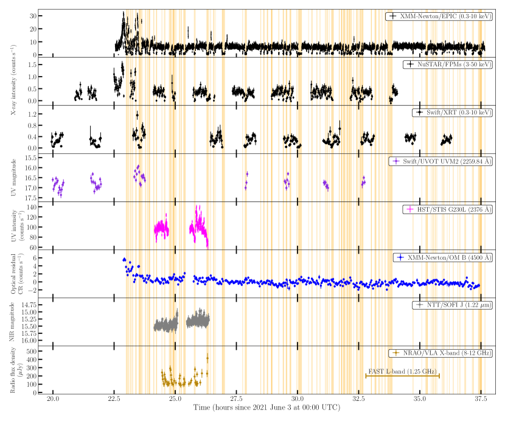
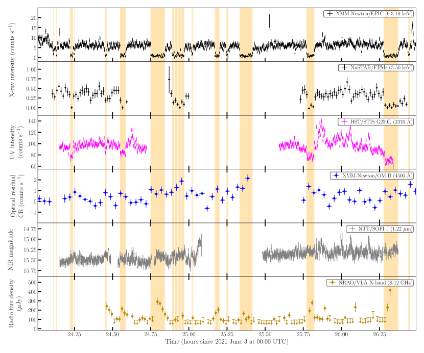
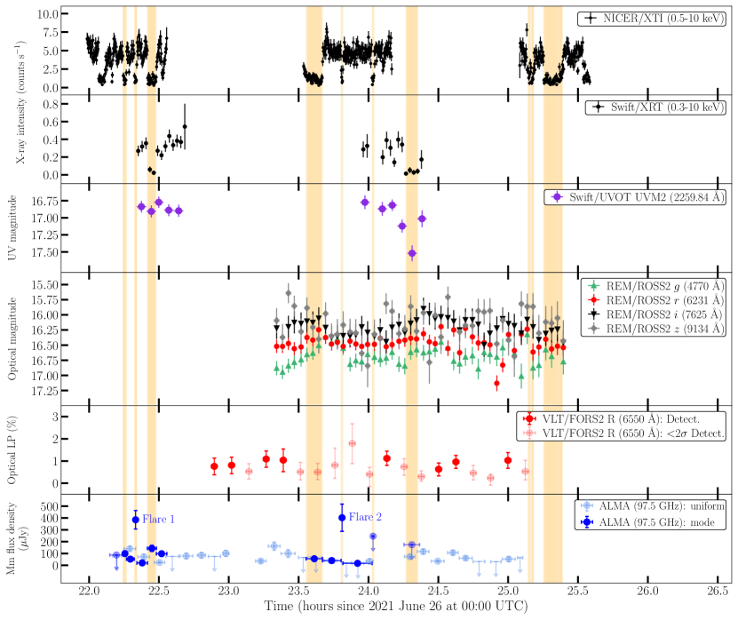
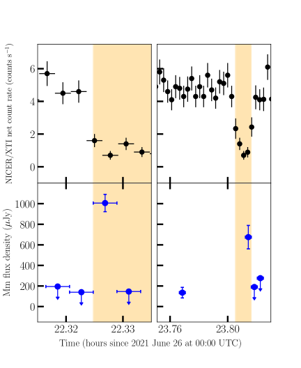
3.2 الخصائص الضوئية/NIR الضوئية
في الليلة الأولى، يكون المصدر أكثر سطوعًا في البداية منه في بقية الرصد (يصل إلى mag)، ويعرض تشكيلًا شبه جيبي سلسًا في الفترة المدارية بشبه سعة 0.2 mag حول قيمة متوسطة تبلغ ماج. نحن نلائم وظيفة جيبية لمنحنى الضوء عن طريق تثبيت الفترة والمرحلة المرجعية للجيوب الأنفية على الفترة المدارية الثنائية وقيمة الطور التي تم الحصول عليها من وقت مرور النجم النابض عبر العقدة الصاعدة، على التوالي، على النحو المشتق بواسطة Miraval Zanon et al. (2022). بعد ذلك، قمنا بطرح الدالة الأكثر ملائمة من معدلات العد المرصودة. يظهر منحنى الضوء المنحرف الناتج في الشكل 1. بعد نشاط التوهج الأولي الذي يشبه سلوك الأشعة السينية، تبدو الكثافة البصرية وكأنها تومض، ولكن دون أي علامة على تبدل النمط.
الشكل 1 يوضح أيضًا منحنى الضوء NIR. التباين في شكل الانخفاضات والخفقان واضح. الانحراف الجزئي لحجم جذر متوسط التربيع لمنحنى الضوء، المحسوب باتباع الطريقة الموصوفة بواسطة Vaughan et al. (2003)، هو (10.10.2)%. لم يلاحظ أي NIR توهج عند التبديل من وضع الأشعة السينية المنخفضة إلى وضع الأشعة السينية العالية، كما تم الإبلاغ سابقًا عن (Papitto et al. 2019; Baglio et al. 2019). علاوة على ذلك، لم نكتشف أي علامات على تبدل النمط في منحنى الضوء. متوسط المقادير المقاسة بشكل منفصل خلال الأنماط المرتفعة والمنخفضة متوافق ضمن 1 ( mag و mag في الأنماط المرتفعة والمنخفضة، على التوالي)، مما يشير إلى أنه لا يوجد ارتباط كبير بين التباين والوضع NIR التبديل.
في الليل 2، تظهر منحنيات الضوء الضوئية تباينًا واضحًا على فترات زمنية قصيرة (الشكل 3، اللوحة الرابعة). على عكس ما شوهد في ليلة 1، لم يتم اكتشاف أي تعديل في الفترة المدارية للنظام. متوسط المقادير هي mag، mag، mag، mag (في النظام الضوئي AB)، وكلها تتفق بشكل هامشي مع تلك التي أبلغ عنها Coti Zelati et al. (2014); Baglio et al. (2016). لتقدير مقدار التباين الجوهري، قمنا بتقييم الانحراف الجزئي لحجم جذر متوسط تربيع لمنحنيات الضوء التالية Vaughan et al. (1994). نجد جذر متوسط جذري منخفض الأهمية لـ و و في دقة زمنية تبلغ 160 s في النطاقات و و، على التوالي، في حين لا يمكن اكتشاف أي تقلب جوهري زائد في النطاق . هذا الكسر من جذر متوسط التربيع يمكن مقارنته بما تم ملاحظته بالنسبة لعدد قليل من الثقوب السوداء XRBs في النطاق البصري على مقياس زمني مماثل، مثل GX 339-4 (Gandhi 2009; Gandhi et al. 2010) و MAXI J1535571 (Baglio et al. 2018). في هذه الأنظمة، يُعزى التباين إلى انبعاث نفاثة وامضة تساهم في تكوين الترددات الضوئية. في المقابل، عندما يهيمن التراكم، عادةً ما يتم قياس القيم المنخفضة لقيمة جذر متوسط التربيع، كما رأينا في حالة الثقب الأسود XRB GRS 1716249 (Saikia et al. 2022).
لسوء الحظ، فإن معظم صور النطاق ذات جودة سيئة، مما يؤدي إلى ظهور FOV فارغ. لقد قمنا بتجميع ثلاث من الصور المجمعة التي كان فيها الحقل مرئيًا وتم اكتشاف J1023 (لذلك إجمالي 1515 s صور التكامل، كلها تم التقاطها أثناء النمط المرتفع)، وقمنا بإجراء المعايرة مقابل مجموعة مختارة من النجوم في الحقل من 2MASS كتالوج المصادر النقطية. لقد حصلنا على متوسط حجم mag، وهو ما يتوافق مع القيم السابقة المذكورة في الأدبيات (انظر على سبيل المثال Coti Zelati et al. 2014; Baglio et al. 2016).
3.3 الخصائص الاستقطابية الضوئية
الشكل 3 يوضح تطور المستوى LP البصري في الليلة الثانية من الرصدات. لتحسين S/N الملاحظات دون فقدان الكثير من المعلومات حول التباين قصير المدى لـ LP، قمنا بدمج القياسات بحيث تغطي كل LP نقطة بيانات 80 s (أربع HWP زوايا 10 s التكامل مجموعتان). نعرّف قياس LP بأنه اكتشاف عندما يصل إلى مستوى ثقة أكبر من 2. باستخدام هذه العتبة، نحصل على إجمالي 8 LP الاكتشافات و11 الحدود العليا عند مستوى ثقة 99.97% (انظر الجدول 3). متوسط مستوى LP، المحسوب كمتوسط لجميع 2-الاكتشافات المهمة، هو . وهذا يتوافق مع النتائج السابقة في نفس الفرقة (نطاق ؛ Baglio et al. 2016). زاوية الاستقطاب مقيدة جيدًا بقيمة )∘ (تم تصحيحها لزاوية استقطاب النجم القياسي).
| Epoch (MJD) | LP () | PA (∘) | Upper limit () |
|---|---|---|---|
| 59391.95402 (?) | |||
| 59391.95917 (?) | |||
| 59391.96436 (?) | – | – | 1.77 |
| 59391.96949 (?) | |||
| 59391.97459 (?) | |||
| 59391.97971 (?) | – | – | 1.99 |
| 59391.98485 (L) | – | – | 1.82 |
| 59391.99000 (H) | – | – | 3.42 |
| 59391.99517 (H) | – | – | 4.77 |
| 59392.00034 (H) | – | – | 2.33 |
| 59392.00549 (H) | |||
| 59392.01063 (?) | – | – | 2.02 |
| 59392.01578 (?) | – | – | 1.22 |
| 59392.02094 (?) | |||
| 59392.02608 (?) | |||
| 59392.03126 (?) | – | – | 1.61 |
| 59392.03643 (?) | – | – | 1.27 |
| 59392.04160 (?) | |||
| 59392.04680 (H) | – | – | 2.25 |
ملاحظات. بالنسبة لعدم الاكتشافات، يتم تحديد الحدود العليا عند مستوى ثقة 99.97%. يشير العمود الأول، بين قوسين، إلى الوضع الذي يشير إليه MJD (‘L’ للوضع المنخفض، ‘H’ للوضع العالي، ‘؟’ عندما يكون غير معروف بسبب عدم وجود ملاحظات متزامنة للأشعة السينية).
عند اكتشافه، يبدو LP ثابتًا إلى حد ما خلال الملاحظات. لقد قمنا بالتحقق من أي تغييرات محتملة في مستوى LP كدالة لوضع الأشعة السينية (منخفض / مرتفع) عن طريق حساب متوسط جميع الصور الملتقطة أثناء الوضعين العالي والمنخفض. وجدنا أن LP كان % (مع 99.97% الحد الأعلى لمستوى الثقة ) في النمط المرتفع و (مع 99.97% الحد الأعلى لمستوى الثقة ) في النمط المنخفض.
لم يتم تصحيح المستويات المقاسة لـ LP للمساهمة بين النجوم، والتي من المتوقع أن تكون منخفضة وفقًا لقانون سيركوفسكي (0.52%; Serkowski et al. 1975). يعرض الشكل 5 معلمات و ستوكس على المستوى لمجموعة البيانات بأكملها، بما في ذلك J1023 (النقاط السوداء)، ونجم المقارنة في الحقل (المربعات الحمراء)، والنجمة القياسية غير المستقطَبة (النجمة الخضراء). يقع النجم القياسي غير المستقطَب قريبًا جدًا من أصل المستوى ، مما يشير إلى أن الاستقطاب الآلي لـ VLT/FORS2 منخفض، كما هو متوقع. من ناحية أخرى، فإن معلمات ستوكس لنجم المقارنة منتشرة حول نقطة مشتركة، بما يتوافق مع موضع المعيار غير المستقطَب داخل 1.5، حيث هو الانحراف المعياري للنقاط. أي انحراف عن موضع المعيار غير المستقطَب على المستوى هو تقدير جيد لاستقطاب المجال بين النجوم (بافتراض أن نجم المقارنة غير مستقطب في جوهره). ومن المثير للاهتمام، أن معلمات ستوكس لـ J1023 تتجمع حول نقطة مشتركة في منطقة مختلفة من المستوى ، مع تشتت أعلى من نجم المقارنة بسبب عدم اليقين الأكبر. بالنسبة للسلسلتين الزمنيتين لمعلمات و Stokes، لا يمكننا المطالبة بأي اكتشاف لتقلبات النطاق الزمني القصير.
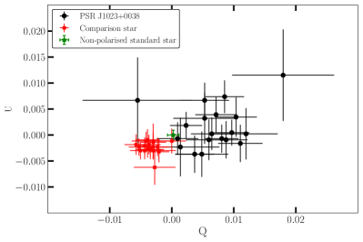
3.4 الانبعاثات المليمترية
الشكل 6 يوضح الانبعاث المستمر ALMA 3.1 مم باتجاه J1023. تم اكتشاف مصدرين ضمن FOV لـ ALMA. تم اكتشاف J1023 عند مستوى دلالة 15. المصدر الآخر، الذي نسميه ALMA J102349.1003824 باتباع اصطلاح التسمية للمصادر الجديدة التي اكتشفها ALMA، يقع 22′′ جنوب شرق J1023 وتم اكتشافه عند مستوى دلالة 9. تعرض اللوحات الموجودة على يمين الشكل خرائط التكبير حول كل مصدر، مع عرض الصورة المستمرة التي تم الحصول عليها بترجيح طبيعي بمقياس الألوان والخطوط السوداء المشتقة من الصورة بـ robust=0. يعرض الجدول 4 إحداثيات الذروة، وكثافة الذروة، والتدفق المتكامل، والحجم المنحل الذي تم الحصول عليه عن طريق تركيب وظيفة Gaussian 2D على الصورة عالية الدقة (robust=0).
| Source | R.A (ICRS) | Dec. (ICRS) | a | b | Deconvolved Sizec | P.A |
|---|---|---|---|---|---|---|
| (hh:mm:ss) | (∘:′:”) | (Jy beam-1) | (Jy) | () | (∘) | |
| PSR J1023 | 10:23:47.6890.001 | 00:38:40.6770.004 | 103.73.6 | 144.68.0 | (0.3050.060)(0.2050.031) | 8629 |
| ALMA J102349.1 | 10:23:49.1310.002 | 00:38:23.720.02 | 9515 | 10929 | ¡0.390.22d | … |
ملاحظات. a ذروة الشدة. b التدفق المتكامل. c FWHM تم الحصول عليها من 2D Gaussian Fits. d المكون هو مصدر نقطي.
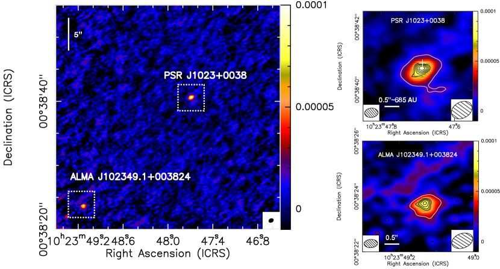
الانبعاث المستمر 3.1 مم من J1023 له شكل مضغوط مع بعض الاستطالة باتجاه الجنوب الشرقي (كما هو موضح في اللوحة اليمنى العلوية من الشكل 6 باستخدام الخطوط السوداء). ذروة انبعاث الاستمرارية المليمترية جنوب الموقع البصري. الحجم المفكك الذي تم الحصول عليه من 2D Gaussian الملاءمة في الصورة robust=0 هو ، والذي يتوافق تقريبًا مع 418AU 281AU ( سم سم) على مسافة 1.37 kpc (وهذا تقريبًا 7104 أضعاف الفصل المداري للنظام Archibald et al. 2013). يبدو أيضًا الانبعاث من ALMA J102349.1003824 مضغوطًا (انظر اللوحة اليمنى السفلية من الشكل 6). ينتج عن التوافق 2D Gaussian مصدرًا يشبه النقطة مع كامل بنصف الحد الأقصى بحجم (انظر الجدول 4). وترد نتائج البحث عن نظيرات هذا المصدر في الأطوال الموجية الأخرى في الملحق A.
لتحديد المؤشر الطيفي لـ J1023 ضمن عرض النطاق الترددي ALMA، قمنا بتصوير البث المستمر من النطاقين الجانبيين السفلي والعلوي، اللذين لهما ترددات مركزية 91.47886 GHz و 103.5115 GHz على التوالي. المؤشر الطيفي الناتج هو ، وهو ما يتوافق مع التقارير السابقة لمتوسط انبعاث سم (Deller et al. 2015; Bogdanov et al. 2018).
لاستكشاف التباين في انبعاث المليمتر، حصلنا على صور ممسوحة ضوئيًا عن طريق المسح (عادةً بمدة 4–5 دقيقة)، باستخدام الترجيح الطبيعي. قمنا بعد ذلك بحساب شدة الذروة وكثافة التدفق مع الأخذ في الاعتبار الانبعاث فوق مستوى . تُظهر اللوحة السفلية من الشكل 3 تطور كثافة التدفق مع مرور الوقت. وقد وجد أن هذه الكمية تختلف بعامل 5 ضمن النطاق 30–160 Jy على نطاق زمني حوالي 5 دقيقة. في بعض الحالات، ظلت كثافة التدفق أقل من حساسية الكشف، مما أدى إلى حدود عليا تصل إلى بضع عشرات من الميكروجانسكي. يوضح الشكل 3 أيضًا السلاسل الزمنية ALMA المستخرجة باستخدام فترات زمنية ذات أطوال متغيرة تتوافق مع فترات حلقات وضع الأشعة السينية. يمكن رؤية حلقتين مشتعلتين بوضوح. قمنا بقياس متوسط كثافة التدفق 8913 Jy في النمط المرتفع و 13423 Jy في النمط المنخفض باستثناء حلقتي التوهج (انظر الجدول 5). بشكل عام، يبدو أن نمط التباين المضاد للارتباط أكثر وضوحًا بين انبعاث cm والأشعة السينية منه بين انبعاثات المليمتر والأشعة السينية.
تعد أوقات التكامل المعتمدة أعلاه فعالة لدراسة تباين انبعاث المليمتر على فترات زمنية دقيقة، ولكنها قد تؤدي إلى متوسط تحسينات كبيرة للتدفق المليمتري على فترات زمنية أقصر بكثير (في حدود الثواني). ولذلك، أجرينا بحثًا مخصصًا عن حلقات التوهج القصيرة عن طريق استخراج صور لفترات مختلفة باستخدام مجموعة البيانات بأكملها. أدى هذا البحث إلى الكشف عن الحلقتين المذكورتين أعلاه من الانبعاث المليمتري الساطع (الشكل 4). ولم يتم الكشف عن أي أحداث ملحوظة أخرى. الحلقة الأولى (المشار إليها فيما يلي باسم ”التوهج 1”) حدثت في 2021 يونيو 26 ضمن النطاق الزمني 22:19:29 – 22:19:44 (UTC) عند الانتقال من النمط المرتفع إلى النمط المنخفض ووصل إلى ذروة كثافة التدفق البالغة 1.010.08 mJy. وقع الحدث الثاني (‘التوهج 2’) خلال النطاق الزمني 23:48:29 – 23:48:44 (UTC) ووصلت إلى ذروة كثافة التدفق 0.70.1 mJy. إن عدم وجود تغطية مستمرة في النطاق المليمتري قبل وأثناء الانتقال من النمط المرتفع إلى النمط المنخفض لا يسمح لنا بتحديد العصر الدقيق لبداية التوهج. نلاحظ أن هذه القيم تشير إلى التدفق عند ذروة التوهجات وبالتالي فهي أعلى من تلك التي تم الحصول عليها في تحليل وضع الأشعة السينية (انظر الشكل 3 والجدول 6)، حيث يتم حساب متوسط الانبعاث على فترات زمنية أطول. لاحظنا زيادة كبيرة في شدة الذروة فوق المستوى المتوسط: عامل 4 للتوهج 1 وعامل 7 للتوهج 2.
لاحظنا تغيرًا واضحًا في شكل الانبعاث المستمر المليمتري خلال حلقتي التوهج (انظر الخطوط البيضاء في الشكل 7). يشير التركيب الغوسي 2D (انظر الجدول 6) إلى أن الانبعاث ممدود على طول الاتجاه من الشمال الشرقي إلى الجنوب الغربي أثناء التوهج 1 (عمودي تقريبًا على انبعاث ALMA عند 3.1 mm الذي تم الحصول عليه مع جميع المرئيات)، بينما يتم حلها بشكل هامشي في اتجاه واحد فقط أثناء التوهج 2. يمكن تقدير الدقة الموضعية المطلقة الاسمية للملاحظات ALMA القياسية كـ 1212 12 انظر https://almascience.eso.org/documents-and-tools/cycle10/alma-technical-handbook، القسم 10.5.2، حيث هو العرض الكامل بنصف الحد الأقصى للشعاع المركب في ثانية قوسية وS/N هي نسبة الإشارة إلى الضوضاء لهدف الصورة. الدقة الموضعية للتوهج 1 هي ، بينما بالنسبة للتوهج 2 فهي أصغر قليلاً عند . ومع ذلك، قد تكون الدقة الموضعية المطلقة الفعلية أسوأ من القيم الاسمية، ربما بعامل 2 أو أكثر، تبعاً لظروف المرحلة الجوية أثناء الرصد. الإزاحة بين مواضع ذروة ALMA وموضع الراديو (Deller et al. 2012) هي 0.4′′ للتوهج 1 و 0.3′′ للتوهج 2. ونظرًا للظروف الجوية المستقرة أثناء الرصد، فمن الممكن أن يكون هذا الإزاحة حقيقيًا لكلا التوهجين. ومع ذلك، يجب توخي الحذر، لأن هذا الإزاحة يمكن مقارنته بالدقة الموضعية لـ ALMA.
| X-ray mode | a | b | Deconvolved Size | P.A | ||
|---|---|---|---|---|---|---|
| (10-12 erg cm-2 s-1) | (Jy beam-1) | (Jy) | (∘) | |||
| High | (0.3380.202)(0.2500.044) | 1058 | ||||
| Low | (0.3840.245)(0.2600.125) | 14145 |
ملاحظات. a مؤشر الفوتون الأكثر ملائمة لنموذج قانون الطاقة الممتص. b التدفق غير الممتص على نطاق الطاقة 0.3–10 keV.
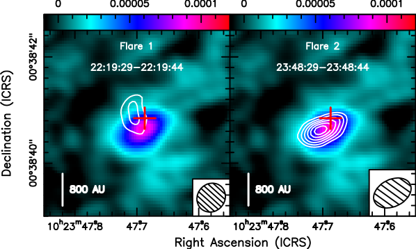
| Flare | R.A (ICRS) | Dec. (ICRS) | a | a | Deconvolved Size | P.A |
|---|---|---|---|---|---|---|
| (hh:mm:ss) | (∘:′:”) | (Jy beam-1) | (Jy) | () | (∘) | |
| Flare 1 | 10:23:47.7050.006 | 00:38:40.920.11 | 42626 | 100684 | (0.960.89)(0.400.10) | 13.36.9 |
| Flare 2 | 10:23:47.7020.002 | 00:38:40.630.01 | 70162 | 675114 | …b | …b |
ملاحظات. a يتم قياس هذه القيم عند ذروة التوهجات على فترات زمنية بطول 15 s، وبالتالي فهي أعلى من تلك التي تم الحصول عليها في تحليل وضع الأشعة السينية والمرسومة في الشكل 3، حيث يتم حساب متوسط الانبعاث على فترات زمنية أطول. b تم حل المصدر بشكل هامشي في اتجاه واحد فقط.
3.5 انبعاث الراديو
3.5.1 الانبعاث المستمر
يظهر منحنى الضوء الراديوي المستخرج من بيانات VLA في الشكل 1. لم يتم اكتشاف J1023 في معظم الأوقات، خاصة أثناء فترات النمط المرتفع. ومع ذلك، تم اكتشافه خلال جميع حلقات النمط المنخفض تقريبًا (هنا يتم الإبلاغ عن حالات عدم اليقين بشأن كثافات التدفق عند مستوى الثقة 1). يتم الإبلاغ عن متوسط كثافات التدفق الراديوي المقاسة بشكل منفصل في النمطين المرتفع والمنخفض في الجدول 7. تتوافق هذه القيم مع تلك التي أبلغ عنها Bogdanov et al. (2018) ضمن حالات عدم اليقين. يشير هذا إلى أن كثافات التدفق الراديوي المقاسة بشكل منفصل في الوضعين تكون مستقرة بشكل ملحوظ على مدى فترات زمنية من السنين.
3.5.2 عدم اكتشاف الانبعاث النبضي
الحد الأقصى لكثافة التدفق النبضية الراديوي المستمدة من ملاحظات FAST هو عامل 5000 أصغر من كثافة التدفق المقاسة عند ترددات مماثلة عندما كان J1023 نشطًا كنجم نابض راديوي (Archibald et al. 2009) وعامل بضع عشرات أخرى مقيدة للحدود التي تم تقييمها مسبقًا (مرة أخرى بترددات مماثلة) بمجرد انتقال J1023 إلى حالة الأشعة السينية منخفضة اللمعان (Stappers et al. 2014; Patruno et al. 2014). الحد الأقصى لكثافة التدفق النبضية الراديوي في النمط المرتفع هو أيضًا أصغر بأربعة أوامر على الأقل من القيمة المتوقعة من خلال استقراء نموذج قانون القدرة الأفضل ملاءمة لـ SEDs للانبعاث النبضي للأشعة السينية إلى (Papitto et al. 2019; Miraval Zanon et al. 2022).
3.6 المقاييس الزمنية للدخول والخروج في النمط المنخفض
قمنا أولاً بفحص أوقات الدخول والخروج في النمط المنخفض في الملاحظة XMM-Newton . بالنسبة لكل حلقة ذات وضع منخفض، استخدمنا نموذجًا بسيطًا لمنحنى ضوء معدل العد الذي يتكون من أربعة مكونات: مستوى ثابت للوضع العالي (مما يسمح بمعدل عد مختلف عند المدخل وعند الخروج من حلقة النمط المنخفض)، ودخول خطي في النمط المنخفض، ومعدل عد ثابت في النمط المنخفض، وخروج خطي. يشبه هذا النموذج في بعض الجوانب ما يستخدم لنمذجة الكسوف في النجوم الثنائية أو عبور الكواكب. على الرغم من أننا لا نتوقع أن نصف بدقة كل حلقة من حلقات النمط المنخفض على حدة، إلا أننا نأخذ النتائج في الاعتبار من الناحية الإحصائية.
لقد طبقنا هذا النموذج على كل حلقة ذات وضع منخفض في منحنى ضوء معدل العد XMM-Newton/EPIC، والذي جُمِّع في حاويات زمنية قدرها 10 s، باستثناء وضع التوهج الأولي للمراقبة. قمنا بنفس الإجراء على بيانات NICER من الليلة الثانية، باستخدام حاوية زمنية قدرها 10 s مرة أخرى. لائمنا النموذج مع 56 حلقات النمط المنخفض لـ XMM-Newton و 10 لـ NICER.
كما هو موضح في الشكل 8، وقت الدخول أقصر من وقت الخروج من النمط المنخفض (). ومن المثير للاهتمام أننا نلاحظ أن حالتي النمط المنخفض المكتشفتين في بيانات NICER وتتزامنان مع التوهجات قصيرة المدة المكتشفة بواسطة ALMA كلاهما لهما أوقات دخول وخروج قابلة للمقارنة (انظر اللوحة اليسرى من الشكل 8). وهذا أمر غير شائع وقد يكون مرتبطًا بإمكانية اكتشاف التوهجات عند الأطوال الموجية المليمترية. تظهر توزيعات XMM-Newton أوقات الدخول والخروج في النمط المنخفض في اللوحة اليمنى من الشكل 8. متوسط وقت الدخول اللوغاريتمي هو s، وهو ما يتوافق مع تجميع الوقت. متوسط وقت الخروج اللوغاريتمي هو s. لقد قمنا أيضًا بالتحقق مما إذا كانت هناك أي علاقة بين وقت الدخول ووقت الخروج ومدة النمط المنخفض ومعدل العد في بداية ونهاية النمط المنخفض ومعدل العد في النمط المنخفض. ومع ذلك، لم نجد أي ارتباطات ذات دلالة إحصائية.
على الرغم من أن النموذج الذي استخدمناه لوصف حلقات النمط المنخفض بسيط، فمن الواضح أن مدة وقت الدخول في النمط المنخفض قصيرة ومتسقة مع وقت التجميع المعتمد، كما أن وقت الخروج من النمط المنخفض قابل للقياس وأطول.
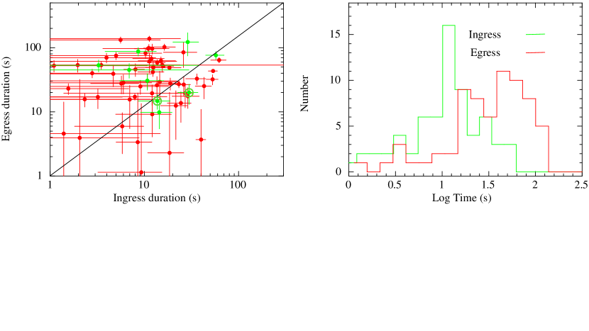
4 مناقشة
4.1 الصورة المادية
تسمح لنا حملتنا، جنبًا إلى جنب مع النتائج السابقة (انظر على سبيل المثال Ambrosino et al. 2017; Bogdanov et al. 2018; Papitto et al. 2019; Miraval Zanon et al. 2022; Illiano et al. 2023 والمراجع الواردة فيه)، برسم صورة مادية شاملة لتبدلات النمطين المرتفع والمنخفض في J1023، والتي تتضمن نجمًا نابضًا نشطًا دائمًا يعمل بالطاقة الدورانية، وقرص تراكم وحلقات من الطرد الجماعي المنفصل فوق نفاثة مدمجة. في ما يلي، نحدد السيناريو المادي أثناء تواجدنا في القسم. 4.2 نصف بالتفصيل نمذجة SED لدعم السيناريو الخاص بنا. يوضح الشكل 9 تمثيلاً مرئيًا للسيناريو الخاص بنا. ونحن لا نناقش هنا نشاط حرق الغاز لأنه لم يتم تناوله ضمن نطاق واسع من الطاقة.
نحن نفترض أنه أثناء النمط المرتفع، يتم الحفاظ على تدفق التراكم خارج نصف قطر أسطوانة الضوء (80 km) عن طريق الضغط الإشعاعي لرياح الجسيمات من النجم النابض النشط الذي يعمل بالطاقة الدورانية (Papitto et al. 2019). يؤدي هذا إلى استبدال المنطقة الأعمق من قرص التراكم المقطوع والرفيع هندسيًا بتدفق سميك هندسيًا وغير فعال إشعاعيًا، كما هو متوقع لمعدلات التراكم المنخفضة (Narayan and Yi 1994). في هذا التكوين، ينتج إشعاع السنكروترون عند جبهة الصدمة التي تتشكل حيث تتفاعل رياح النجم النابض مع الجريان الداخلي الجزء الأكبر من انبعاث الأشعة السينية بالإضافة إلى الأشعة السينية، UV، والانبعاث النبضي البصري (Papitto et al. 2019; Veledina et al. 2019). يؤدي اصطدام الجسيمات المشحونة عالية الطاقة من رياح النجم النابض مع المادة المتدفقة إلى داخل القرص إلى زيادة مستوى التأين في القرص. ونتيجة لذلك، يتم سحب المادة المتدفقة إلى المجال المغناطيسي للنجم النابض ويتم تسريعها، مما ينتج عنه تدفق مدمج من البلازما التي تتدفق إلى الخارج. وفقًا لنموذج SED الخاص بنا، يكون طيف السنكروترون النفاث المقابل سميكًا بصريًا حتى نطاق الأشعة تحت الحمراء المتوسط ويتكسر إلى رقيق بصريًا فوق تردد هرتز، مما يعطي مساهمة صغيرة فقط في طاقات الأشعة السينية (8–18% في 0.3–10 keV انظر الشكل 10 والجدول 8).
يمكن ربط الانتقال من النمط المرتفع إلى النمط المنخفض بحدوث توهجات مليمترية قصيرة. هناك أدلة قوية على أن واحدًا على الأقل من هذه التوهجات متورط بشكل مباشر في إحداث الانتقال (انظر الشكل 3). نفسر هذه التوهجات على أنها بصمة قذف كتلي متقطع يشير إلى إزالة الجريان الداخلي (انظر القسم 4.1.1)، على غرار ما تم ملاحظته في أنظمة XRB الأخرى المحتوية على ثقوب سوداء أو نجوم نيوترونية (على سبيل المثال Cyg X-3، Circinus X-1، V404 Cygni، MAXI J1535-571، و MAXI J1820+091؛ Egron et al. 2021; Fender et al. 1998, 2023; Russell et al. 2019; Homan et al. 2020)، وإن في أنظمة تراكم مختلفة. بمجرد طرد الجريان الداخلي في القذف المتقطع، لم يعد يحدث انبعاث السنكروترون من الصدمة، مما يؤدي إلى انخفاض تدفق الأشعة السينية وإخماد الأشعة السينية، UV والنبضات البصرية. يدخل النظام إلى النمط المنخفض.
أثناء النمط المنخفض، لا يزال بإمكان رياح النجم النابض اختراق قرص التراكم، والاصطدام بالمادة المتدفقة، وإطلاق النفاثة المدمجة، مما يساهم في الانبعاث متعدد النطاقات بنفس الطريقة كما في النمط المرتفع. من المحتمل أن يكون انبعاث الأشعة السينية (تقريبًا) بالكامل من إشعاع السنكروترون الرقيق بصريًا من هذه النفاثة (الشكل 10، اللوحة اليمنى)، مع مؤشر قانون الطاقة (حيث تتدرج كثافة التدفق مع تردد المراقبة كما ؛ انظر الجدول 8). في الوقت نفسه، يتحول الانبعاث المرتبط بالقذف المتقطع تدريجيًا نحو الترددات المنخفضة حيث تتوسع المادة المقذوفة بشكل ثابت الحرارة أثناء النمط المنخفض وتتطور بسرعة من سميكة بصريًا إلى رقيقة بصريًا (Bogdanov et al. 2018). يحتوي مكون الانبعاث هذا على طيف حاد () ويوفر مساهمة تدفق إضافية أعلى من الانبعاث السميك بصريًا من النفاثة المدمجة عند ترددات أقل من نطاق المليمتر (انظر الشكلين 1 و 3).
في النهاية، يبدأ الجريان القادم من القرص بإعادة ملء المناطق الداخلية خارج أسطوانة الضوء للنجم النيوتروني مباشرةً على مقياس زمني حراري (عشرات الثواني) نظرًا لطبيعتها التي يهيمن عليها التأفق. تؤدي إعادة ملء القرص إلى إعادة إنشاء منطقة الصدمة مع رياح النجم النابض، مما يؤدي إلى زيادة الانبعاث والنبضات عند ترددات الأشعة السينية وفوق البنفسجية والبصرية (Papitto et al. 2019; Miraval Zanon et al. 2022; Illiano et al. 2023). وبالتالي يقوم النظام بالتبديل إلى النمط المرتفع.
كما هو موضح في القسم 3.6، تظهر أوقات الدخول والخروج في النمط المنخفض فرقًا ذا دلالة إحصائية، حيث يكون متوسط وقت الخروج أطول من متوسط وقت الدخول. في صورتنا، يحدث الدخول في النمط المنخفض بسبب إخراج المناطق الأعمق من القرص. سيحدث هذا على نطاق زمني ديناميكي. يمكننا تقدير المسافة التي يجب أن تتراجع عندها الحافة الداخلية للقرص في J1023 بعيدًا عن NS عند الانتقال من النمط المرتفع إلى النمط المنخفض بافتراض أن معظم انبعاث الأشعة السينية في النمط المنخفض يرجع إلى التدفق ومن ثم فرض أن لمعان انبعاث السنكروترون في مقدمة الصدمة يكون على الأكثر، على سبيل المثال، 10% من ذلك الملاحظ في النمط المنخفض. وهذا يعطي مسافة شعاعية تبلغ 1600 كم ( erg s-1 هو اللمعان الدوراني؛ Archibald et al. 2013). وينبغي اعتبار هذه القيمة حدًا أدنى: عند نصف القطر الأكبر، سيكون لمعان الأشعة السينية الناتج عن الصدمة أصغر. النطاق الزمني الديناميكي هو s عند . تظهر الملاحظات من XMM-Newton وNICER أن أدوات الأشعة السينية الحالية قادرة على فحص تبدل النمط في J1023 على فترات زمنية قصيرة مثل 10 s. في المستقبل، بعثات الأشعة السينية المقترحة التي تقدم أدوات ذات مناطق تجميع أكبر بكثير، وإنتاجية عالية، ودقة زمنية ممتازة، مثل التلسكوب المتقدم الجديد للفيزياء الفلكية العالية ENergy (NewAthena; Nandra et al. 2013)، مهمة توقيت الأشعة السينية وقياس الاستقطاب (eXTP; Zhang et al. 2016) والمرصد الطيفي لحل الوقت للأشعة السينية لطاقة النطاق العريض (STROBE-X؛ Ray et al. 2019)، سيكونان قادرين على أخذ عينات من المفتاح على نطاق زمني 10 s واختبار تنبؤاتنا.
إن طرد وتجديد الجريان الداخلي في J1023 أثناء الانتقال من النمط المرتفع إلى النمط المنخفض ومن النمط المنخفض إلى النمط المرتفع يذكرنا بطرد هالة الأشعة السينية إلى نفاثة والتجديد اللاحق الذي لوحظ في الميكروكوازار المجري GRS 1915105 (Méndez et al. 2022). أظهرت دراسة سابقة أنه في حالة GRS 1915105، يقوم القرص الخارجي بإعادة ملء الجزء المركزي من النظام بثبات على مقياس زمني لزج (Belloni et al. 1997). وقت الصعود هو المدة التي يستغرقها انتشار جبهة التسخين عبر القرص المركزي. بافتراض سرعة دون سرعة الصوت لجبهة التسخين، مع سرعة الصوت المحسوبة في حالة القرص البارد ( K)، يمكننا تقدير وقت الارتفاع ليكون s لـ J1023.
في الصورة أعلاه، افترضنا أن الانبعاث من النفاثة المدمجة يظل ثابتًا نسبيًا مع مرور الوقت، ولكن من الممكن أيضًا أن تتعطل النفاثة جزئيًا عن طريق طرد البلازما المنفصل عند الانتقال من النمط المرتفع إلى النمط المنخفض. ومع ذلك، إذا لم تكن القذفة نشطة بما يكفي للتغلب على المجالات المغناطيسية والضغوط داخل النفاثة، أو إذا لم يكن كثيفًا أو محاذيًا جيدًا بما يكفي للتفاعل بفعالية مع الدفق، فسوف تعيد النفاثة تأسيس نفسها بسرعة ويظهر كما لو أنه لم ينطفئ أبدًا. في كلتا الحالتين، ستظل النفاثة تساهم بنفس القدر من التدفق في كلا الوضعين، خاصة في نطاق الراديو حيث يتم ينتج الانبعاث على مسافات أكبر من NS (من ترتيب الدقائق الضوئية إلى الساعات الضوئية؛ Chaty et al. 2011) وبالتالي فإن أي تغييرات تكون على فترات زمنية أطول بكثير من تبدل النمط.
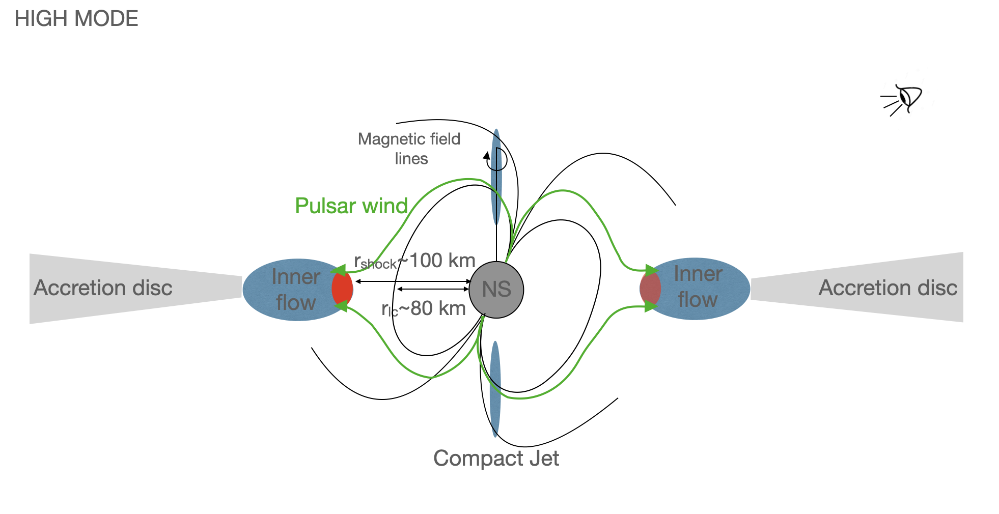
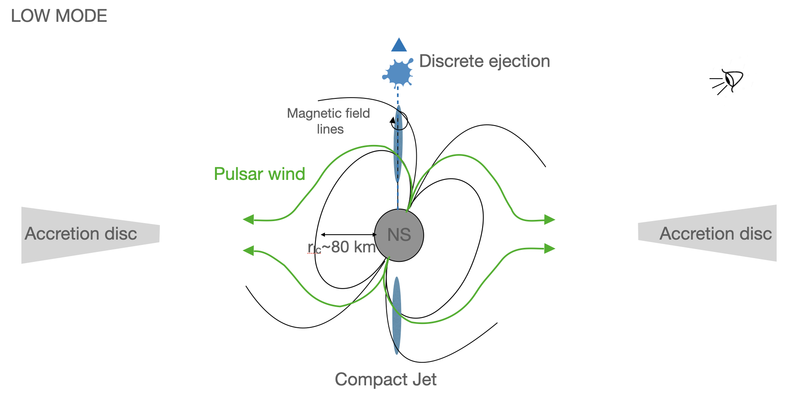
4.1.1 توهجات ملليمترية كبصمة القذف المتقطع
بدءًا من المقاييس الزمنية للتوهج المليمتري الأول الذي حدث في الليلة الثانية (والذي يتميز بوقت بداية ونهاية أكثر دقة من التوهج الثاني) والمقاييس الزمنية النموذجية للتوهجات الراديوية التي حدثت في الليلة الأولى، حاولنا إعادة إنتاج منحنيات الضوء للتوهجات المماثلة من خلال افتراض أنها ناجمة عن حركة وتمدد فقاعة من البلازما المتسارعة بالقرب من النجم النابض. بعد عمل Fender and Bright (2019)، افترضنا أن توسع الطرد المنفصل النموذجي موصوف جيدًا بواسطة نموذج فان دير لان (van der Laan 1966)1313 13 تعتمد الحسابات التي أجريناها على van der Laan (1966) وهي موصوفة في دفتر ملاحظات Jupyter متوفر في https://github.com/robfender/ThunderBooks/blob/master/Basics.ipynb. نظرًا لعدم ملاحظة أي توهج في هذه الدراسة في وقت واحد على ترددين مختلفين، فإننا غير قادرين على تقييد معلمات النموذج بشكل صحيح. ومع ذلك، فنحن قادرون على التحقق مما إذا كان بإمكاننا إعادة إنتاج التوهجات بكثافة تدفق قصوى وفترات تتفق مع ما لاحظناه. لقد افترضنا أن النقطة يتم إطلاقها على بعد بضع مئات من الكيلومترات من NS بسرعة نسبية معتدلة ( )، وتتوسع خطيًا بمرور الوقت. لقد افترضنا أيضًا وجود مجال مغناطيسي يتوسع مع المسافة من الجسم المضغوط مثل ، مع مجال مغناطيسي في موقع الإطلاق بترتيب 105 G (انظر المعادلة 6 في Papitto et al. 2019 للتعبير عن المجال المغناطيسي بعد الصدمة لرياح النجم النابض المتناحية). بالإضافة إلى ذلك، فقد أخذنا في الاعتبار كثافة عدد الإلكترون 1011–1012 cm-3، وهو ما يتوافق مع الحد الأدنى المقدر من التحليل الطيفي للأشعة السينية عالي الدقة (Coti Zelati et al. 2018). تظهر حساباتنا أنه يمكننا إنتاج توهجات تدوم لبضع ثوان وتصل إلى ذروة كثافة التدفق في حدود 1 mJy عند تردد ALMA النطاق-3 النقطه الوسطى. علاوة على ذلك، ستؤدي هذه التوهجات إلى توهجات تستمر لبضع عشرات من الثواني وتصل إلى ذروة كثافة التدفق في حدود 0.2 mJy عند تردد النقطه الوسطى VLA Band-X، كما لوحظ. تتوافق هذه النتائج مع تنبؤات نموذج فان دير لان بشأن فقاعة البلازما المتوسعة.
على الرغم من أننا لا نستطيع إثبات الأصل الحقيقي للتوهجات بشكل قاطع، إلا أنه يمكننا أن نعزو عدم اكتشاف التوهجات في خمسة من انتقالات النمط المرتفع إلى المنخفض السبعة التي يغطيها ALMA إلى الاختلاف في الخصائص الجوهرية للمادة المقذوفة. وتشمل هذه الحجم والكثافة ودرجة الحرارة وتوزيع طاقة الإلكترون وزاوية فتح المادة المقذوفة. بشكل عام، تميل المقذوفات الأصغر حجمًا والأقل كثافة والأكثر برودة والتي تنتقل بسرعات كبيرة أبطأ إلى إنتاج انبعاث مليمتري خافت (انظر على سبيل المثال Tetarenko et al. 2017; Wood et al. 2021). بالإضافة إلى ذلك، يمكن أن يؤثر توزيع المادة المقذوفة على طول خط الرؤية أيضًا على إمكانية اكتشاف التوهجات المليمترية من خلال تأثيرات الامتصاص والتشتت (وهذا على الأرجح هو السبب الرئيسي لعدم اكتشاف البث الراديوي النبضي أيضًا؛ انظر القسم 4.1.2). بشكل عام، يمكن لمجموعة من هذه العوامل أن تفسر خصائص الانبعاث المتباينة التي يتم ملاحظتها عند الترددات المليمترية والراديو أثناء (ومتابعة) الانتقالات المختلفة من النمط المرتفع إلى النمط المنخفض. من المحتمل أن تؤثر هذه الاختلافات على الوقت الذي يستغرقه الجريان الداخلي لاستعادة نفسه وإنتاج انبعاث الصدمة، مما يؤدي إلى اختلافات ملحوظة في المدة بين حلقات النمط المنخفض الفردية.
4.1.2 عدم اكتشاف نبضات الراديو
يمكن أن يكون عدم اكتشاف النبضات الراديوية بسبب ظواهر ”جوهرية” داخل الغلاف المغناطيسي للنجم النابض (أي بغض النظر عن وجود محركات خارجية مثل المواد المتراكمة) مثل التقطع و/أو الإلغاء (انظر على سبيل المثال Weng et al. 2022 للاطلاع على الاعتبارات المماثلة الأخيرة للنظام LS I 61 303). ومع ذلك، لم يتم ملاحظة هذه الظواهر خلال حملات التوقيت الراديوي واسعة النطاق عندما كان النظام في حالة النجم النابض الراديوي (على سبيل المثال Archibald et al. 2013; Stappers et al. 2014)، لذلك من غير المرجح أن تكون سبب عدم الكشف. وبدلاً من ذلك، قد يكون عدم اكتشاف النبضات بسبب وجود مادة تغلف النظام (انظر أيضًا Coti Zelati et al. 2014; Stappers et al. 2014). في هذا السيناريو، يمكننا تقدير حد أدنى لمعدل نقل الكتلة من النجم المرافق من خلال اشتراط أن يكون العمق البصري الناتج عن الامتصاص الحر أكبر من الوحدة طوال مدة الرصد FAST. يتم إعطاء التعبير التحليلي للعمق البصري الحر بواسطة
| (2) |
حيث هو معدل نقل الكتلة بوحدات yr-1 و و هي كتلة NS والنجم المرافق على التوالي، و هي الكسر الكتلي للهيدروجين والهيليوم، على التوالي، هي درجة حرارة البلازما بوحدات K، هي سرعة رياح الجسيمات بوحدات m s-1 و هي الفترة المدارية بالساعات (Burgay et al. 2003; Iacolina et al. 2009). نفترض = 1.65 , = 0.24 , =4.75 ح (Archibald et al. 2009), =1, =0.7 و =0.31414 14 نلاحظ أن افتراضنا بشأن و يجب اعتباره تقريبًا من الدرجة الصفرية حيث أظهرت دراسة حديثة أجراها Shahbaz et al. (2022) أن الوفرة الكيميائية للنجم المرافق لـ J1023 تختلف عن تلك الموجودة في معظم XRBs. ومع ذلك، منذ ، فإن الحد الأدنى لـ يزيد فقط بعامل قليل إذا تم افتراض القيم الأصغر و .، و =1. من أجل الحصول على ، وبالتالي عدم اكتشاف إشارة الراديو بسبب التشتت الحر، فإننا نقدر yr g s-1. هذه القيمة هي عامل 10–60 أكبر من معدل تراكم الكتلة المقدر بناءً على تحليل منهجي للتغير غير الدوري للأشعة السينية لـ J1023 في حالة الأشعة السينية منخفضة اللمعان (Linares et al. 2022). وهذا يعني أن جزءًا كبيرًا من الكتلة المتراكمة لا يصل إلى سطح الجسم المضغوط ويتم إخراجه من النظام بدلاً من ذلك. ومن الجدير بالذكر أن معدل نقل الكتلة المتوقع لـ J1023، بناءً على نقل الكتلة من خلال فقدان الزخم الزاوي المداري، هو (Verbunt 1993).
4.2 توزيعات الطاقة الطيفية
4.2.1 إعداد البيانات
لقد استخرجنا SEDs بشكل منفصل في النمطين المرتفع والمنخفض وقمنا بتركيبهما باستخدام نموذج يعكس السيناريو المادي المقترح في القسم 4.1.
تمت إزالة اللون الأحمر من NIR والبيانات الضوئية وUV التي تم الحصول عليها في ليلة 2 بافتراض mag، المحسوبة من XMM-Newton تقدير باستخدام العلاقة / التي أبلغ عنها Foight et al. (2016). وقد تم تقدير معاملات الامتصاص في النطاقات الأخرى باستخدام المعادلات الواردة في Cardelli et al. (1989)، وهي مدرجة في العمود الأخير من الجدول 7.
بالنسبة للوضع المنخفض SED، أخذنا في الاعتبار البيانات الضوئية التي تم الحصول عليها بين MJD (يوم جوليان المعدل) 59392.01085 و59392.01434، بإجمالي ثلاث صور تكامل 60 متتالية في كل نطاق؛ تدفق النطاق هو متوسط التدفقات المقاسة بـ NTT/SOFI بينما كان المصدر في النمط المنخفض، وفقًا لمراقبتنا XMM-Newton ؛ تم قياس التدفق UV (uvm2) على MJD 59392.01302; كثافات التدفق الراديوي مأخوذة من الملاحظة VLA من 2021 يونيو 3–4؛ تم اشتقاق كثافة التدفق المليمترية من تكديس جميع الصور ALMA التي تم الحصول عليها أثناء الأوضاع المنخفضة. لم يتم الحصول على أي ملاحظات للنطاق أثناء النمط المنخفض. تم حساب تدفق الأشعة السينية غير الممتصة على أنه متوسط التدفق خلال جميع فترات النمط المنخفض.
بالنسبة للوضع العالي SED، أخذنا في الاعتبار بيانات النطاق التي تم الحصول عليها بين MJD 59392.00237 و59392.00289، ثم من MJD 59392.00593 إلى 59392.00832 (أي جميع الصور الموجودة في والتي تم اكتشاف J1023 ، s)؛ تدفق النطاق هو متوسط جميع التدفقات المقاسة بـ NTT/SOFI بينما كان المصدر في النمط المرتفع، وفقًا لرصدنا XMM-Newton؛ بالنسبة للنطاقات الضوئية، اعتبرنا صورة 60 واحدة لكل نطاق، عند MJD 59392.00528؛ تم الحصول على التدفق UV (uvm2) على MJD 59392.00413 ؛ كثافات التدفق الراديوي مأخوذة من الملاحظة VLA بتاريخ 2021 يونيو 3–4؛ تم اشتقاق كثافة التدفق المليمترية بعد تكديس جميع الصور ALMA التي تم الحصول عليها خلال حلقات النمط المرتفع. تم حساب تدفق الأشعة السينية غير الممتصة على أنه متوسط التدفق خلال جميع فترات النمط المرتفع.
| Band | (Hz) | Flux Density (mJy) | (mag) | |
| Low mode | High mode | |||
| Radio | – | |||
| mm | – | |||
| – | ||||
4.2.2 إعداد النموذج
النمط المنخفض. لإجراء الملاءمة مع SED، استخدمنا نموذجًا يشتمل على جسم أسود لنجم مشعع وقرص تراكم متعدد الألوان، جنبًا إلى جنب مع قانون الطاقة المكسور لوصف المكونات السميكة والرفيعة بصريًا لانبعاث السنكروترون من النفاثة المدمجة. بالإضافة إلى ذلك، قمنا بدراسة قانون الطاقة لنمذجة الانبعاث الرقيق بصريًا من المقذوفات المتقطعة عند جميع الترددات. بالنسبة للمكون النجمي، اعتبرنا نموذج نجم مشعع (انظر المعادلة 8 و 9 من Chakrabarty 1998) حيث يُسمح لدرجة حرارة سطح النجم () بالتغير والمسافة إلى J1023 ()، نصف قطر النجم المرافق ()، الفصل الثنائي ()، لمعان التشعيع () وبياض النجم () مثبتان على معلوم (أو معقول) القيم: pc (Deller et al. 2012)، (Archibald et al. 2009)، ، و، حيث هي الكتلة NS، هي كتلة النجم المرافق، hrs هي الفترة المدارية الثنائية و هو ثابت الجاذبية. تم تثبيتها على erg s-1القيمة المقدرة بـ Shahbaz et al. (2019) من اختلاف درجات حرارة الجوانب المضيئة والمظلمة للنجم المرافق J1023. تتوافق هذه القيمة مع 14% من لمعان الدوران للأسفل للنجم النابض (Archibald et al. 2013)، وهي بنفس ترتيب سطوع الأشعة السينية وأشعة جاما في حالة الأشعة السينية منخفضة اللمعان. بالنسبة لنموذج قرص التراكم متعدد الألوان (المعادلات 10–15 بواسطة Chakrabarty 1998)، فقد سمحنا لنصف القطر الداخلي لقرص التراكم حيث يصبح الانبعاث البصري/UV ذا صلة () بالتغير، بينما قمنا بتثبيت بياض الأشعة السينية للقرص إلى 0.95 (Chakrabarty 1998) ومعدل النقل الجماعي إلى . هذه هي القيمة المتوقعة لنظام XRB ذو فترة مدارية قصيرة يستضيف نجم التسلسل الرئيسي وينقل الكتلة من خلال فقدان الزخم الزاوي (Verbunt 1993)، ويتوافق مع الحد الأدنى المقدر من عدم اكتشاف النبضات الراديوية (القسم 2.6). يحتوي مكون قانون القوة المعطل على التطبيع والميلين و وتردد الكسر كمعلمات حرة؛ قانون الطاقة المرتبط بالانبعاث من القاذف المنفصل له التطبيع (محسوب على تردد 10 GHz) والميل كمعلمات حرة.
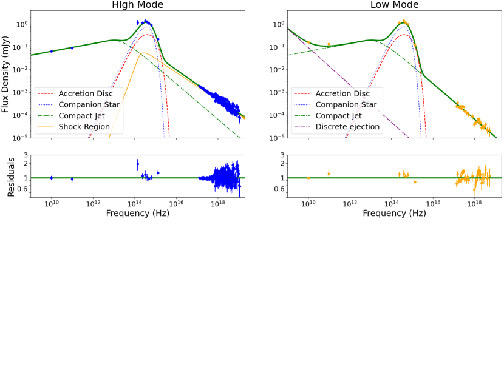
| Component | Parameter | Posterior | Prior bounds | |
| Low mode | High mode | |||
| Irradiated star | (K) | |||
| Accretion disc | Log [ / 1 cm] | |||
| Compact jet | Log [ / 1 Hz] | |||
| Log [ / 1 mJy] | ||||
| Shock emission | Log [ / 1 Hz] | – | ||
| – | ||||
| Log [ / 1 mJy] | – | |||
| Discrete ejecta | – | |||
| Log [ / 1 mJy] | – | |||
| Bayesian p-value | 0.07 | 0.78 | – | |
ملاحظات. تم الإبلاغ عن القيم المتوسطة للتوزيعات الخلفية لمعلمات النموذج، إلى جانب حالات عدم اليقين الدنيا والعليا. تتوافق حالات عدم اليقين هذه مع المئين 15.9 و84.1 للتوزيعات الخلفية لكل معلمة. يُبلغ العمود الأخير عن الحدود السابقة التي تم استخدامها لجميع المعلمات؛ هو توزيع طبيعي يتمركز في وبتباين ، و هو توزيع منتظم في الفترة . ∗ القيمة من Shahbaz et al. (2022). † القيمة من Bogdanov et al. (2018).

النمط المرتفع. استخدمنا نموذجًا أكثر تعقيدًا يتبع الصورة الفعلية الموضحة أعلاه. على وجه الخصوص، اعتبرنا أن الأشعة السينية يتم إنتاجها من خلال مجموع المكون الرقيق بصريًا لانبعاث السنكروترون من قاعدة النفاثة المدمجة وانبعاث السنكروترون من منطقة الصدمة بين رياح النجم النابض والجريان الداخلي. بالنسبة للأخير، استخدمنا التعبير التحليلي لطيف السنكروترون بـ Chevalier (1998) (انظر معادلته 1). بالنسبة للانبعاث عند الترددات المنخفضة، قمنا بتضمين الجسم الأسود للنجم المشعع (التثبيت إلى erg s-1)، والجسم الأسود متعدد الألوان لقرص التراكم، والمكون السميك بصريًا لانبعاث السنكروترون من النفاثة المدمجة. معلمات التناسب هي ، ، ، ، ، ، ، و ، حيث ، ، هي ذروة تردد انبعاث السنكروترون، وانحدار انبعاث السنكروترون الرقيق بصريًا وتطبيع انبعاث السنكروترون، على التوالي.
4.2.3 الموديل مناسب
باستخدام مجموعتي البيانات (النمطين المرتفع والمنخفض)، أجرينا أخذ عينات MCMC من دالة كثافة الاحتمالية الخلفية لمساحة المعلمة للنموذجين في وقت واحد (نظرًا لأن كلا النموذجين مشتركان في بعض المعلمات الحرة). استخدمنا مقياسًا غاوسيًا مسبقًا لدرجة حرارة النجم المتمركزة على القيمة المقاسة بـ Shahbaz et al. (2022) أثناء حالة القرص، = () K. تم أيضًا استخدام البادئات الغوسية للمعلمات (متمركزة على ) و (متمركزة على )، بعد نتائج Bogdanov et al. (2018). نلاحظ أننا جربنا أيضًا مقدمات غاوسية أوسع لهذه المعلمات، مما أدى إلى توزيعات خلفية أوسع مع متوسطات متوافقة مع النتائج أدناه ضمن 1–2. بالنسبة لجميع المعلمات الأخرى، استخدمنا مقدمات موحدة على فترات واسعة جدًا لأخذ عينات من منطقة كبيرة من مساحة المعلمة (انظر العمود الأخير من الجدول 8). وهذا أمر ذو أهمية كبيرة لتقليل احتمالية وقوع معلمات المصدر الفعلية خارج المنطقة التي تم أخذ عينات منها من قبل الكهنة المختارين.
4.2.4 النتائج
نتائج التوافق مذكورة في الجدول 8 وملخصة في الفقرات التالية. تم تقدير جميع المعلمات على أنها الوسيط للتوزيعات الخلفية الهامشية، مع فواصل زمنية موثوقة قادمة من المئين 16th–84 للتوزيعات الخلفية (انظر الشكل 11 للحصول على الرسوم البيانية لعينات المعلمات). معظم التوزيعات الخلفية الهامشية للمعلمات الموضحة في الشكل 11 هي تقريبًا غاوسية، مما يعني أنها متماثلة تقريبًا. يوضح الشكل 11 أيضًا وجود علاقة قوية بين و، وبين و. ومع ذلك، فإن هذا ليس مفاجئًا بالنظر إلى العدد الشحيح من النقاط عند أدنى الترددات واستحالة تقييد الكميات مثل و، بسبب العديد من المكونات المتداخلة عند الترددات تحت الحمراء والبصرية. على وجه الخصوص، نلاحظ أن ، و لها توزيعات خلفية غير متماثلة، مع ذيول طويلة نحو الحد العلوي أو الأدنى للفاصل الزمني المختار للسابق، اعتمادًا على المعلمة. ومع ذلك، فإن ذروة توزيعاتها محددة جيدًا (انظر الشكل 11). لتقدير جودة الملاءمة، استخدمنا القيمة p البايزية (المذكورة في السطر الأخير من الجدول 8; Lucy 2016). القيمة p هي 0.78 للوضع العالي و0.07 للوضع المنخفض، مما يعني أن نتائج الملاءمة مقبولة بالفعل (مع إشارة طفيفة إلى حالات عدم اليقين المبالغ فيها والمقللة في تقدير الوضع المرتفع والمنخفض، على التوالي).
يتمتع انبعاث السنكروترون الناجم عن الصدمة بكثافة تدفق أعلى في النطاق البصري من متوسط كثافة التدفق النبضية البالغ 1% المقدرة بـ Papitto et al. (2019)، مما يجعل السيناريو الخاص بنا معقولًا. على وجه الخصوص، نجد أن الصدمة تساهم بـ 3% في الانبعاث في النطاق البصري في النمط المرتفع، وهو ما يشبه مساهمة المكون الرقيق بصريًا في انبعاث النفاث المضغوط. في النطاق XMM-Newton/EPIC 0.3–10 keV، تمثل الصدمة 83% من الانبعاث، بينما تساهم النفاثة فقط 17% من التدفق في النمط المرتفع.
4.3 قياسات الاستقطاب البصري وتوقعات استقطاب الأشعة السينية
متوسط الاستقطاب البصري المذكور في هذا العمل مشابه للمستويات التي تم قياسها مسبقًا لهذا المصدر (Baglio et al. 2016; Hakala and Kajava 2018). بما أن مستوى الاستقطاب هو 1%، فمن الممكن أن يكون له أصول متعددة. نظرًا لعدم تعديل معلمات ستوكس مع الفترة المدارية، فمن غير المرجح أن يكون مصدر الاستقطاب هو تشتت الإشعاع في أي منطقة من النظام (مثل سطح قرص التراكم)، على عكس الاقتراحات السابقة (Baglio et al. 2016). نحدد آليتي انبعاث رئيسيتين محتملتين للانبعاث المستقطب، وكلاهما غير حراري: انبعاث السنكروترون الرقيق بصريًا من النفاثة المدمجة، أو انبعاث السنكروترون عند الصدمة بين رياح النجم النابض وتدفق التراكم، والذي يؤدي أيضًا إلى ظهور النبضات البصرية المرصودة (كما يقترح أيضًا Hakala and Kajava 2018). كثافة التدفق النفاث في النطاق هي 0.02 mJy، وهو ما يتوافق مع مساهمة كسرية في التدفق الإجمالي في نفس النطاق من 2.4% و 2% في الوضعين العالي والمنخفض على التوالي. في النمط المرتفع، حيث يكون مستوى الاستقطاب المقاس في النطاق هو 0.650.43%، وهذا يترجم إلى مستوى استقطاب لانبعاث النفاث من 26% (أو 37% إذا تم اعتبار متوسط مستوى الاستقطاب 0.92% بدلاً من ذلك). في النمط المنخفض، يتم بدلاً من ذلك استقطاب انبعاث النفاث بشكل جوهري عند مستوى 17%. بعد Shahbaz (2019) والمراجع الواردة فيه، نقدر مستوى ترتيب خطوط المجال المغناطيسي لـ 30% (مع الأخذ في الاعتبار حالة انبعاث السنكروترون الرقيق بصريًا مع ميل طيفي قدره -0.78، كما تم الحصول عليه من الملاءمة والمتوسط عبر الأوضاع؛ انظر الجدول 8). يشير هذا بالفعل إلى وجود مجال مغناطيسي عالي الترتيب ويشير إلى أن tMSPs قد يحتوي على مجال مغناطيسي أكثر ترتيبًا عند قاعدة النفاث من NS الأخرى والثقب الأسود XRBs (Russell and Fender 2008; Baglio et al. 2014; Russell et al. 2016; Baglio et al. 2020). بناءً على صورتنا، يمكن أن يُعزى ذلك إلى وجود تدفق مستمر وثابت للبلازما بالقرب من النجم النابض، مما قد يساعد في الحفاظ على بنية مجال مغناطيسي أكثر تنظيمًا عند قاعدة النفاث. بافتراض أن الاستقطاب البصري المرصود يرجع إلى مكون الانبعاث هذا وأن نفس عدد الإلكترونات المتسارعة في النفث ينتج إشعاع السنكروترون الرقيق بصريًا في جميع الترددات فوق تردد الكسر، يمكننا التنبؤ بمستوى الاستقطاب في نطاق الأشعة السينية - في نطاق الطاقة 2–8 keV لمستكشف قياس استقطاب الأشعة السينية للتصوير (IXPE; Weisskopf et al. 2016; Soffitta et al. 2021) بسبب تدفق 17% في النمط المنخفض، حيث يساهم النفاث في 100% من التدفق وفقًا لـ لدينا SED النمذجة.
وبدلاً من ذلك، قد ينشأ الاستقطاب البصري المرصود من إشعاع السنكروترون في منطقة الصدمة بين رياح النجم النابض والتدفق المتراكم. في هذا السيناريو، يجب اكتشاف الاستقطاب فقط أثناء النمط المرتفع. لسوء الحظ، فإن أهمية نتائج الاستقطاب التي تم الحصول عليها في الوضعين العالي والمنخفض بشكل منفصل ليست عالية بما يكفي للتحقق من ذلك، حيث أن النتائج متوافقة مع بعضها البعض ضمن ( في النمط المنخفض و 0.650.43% في النمط المرتفع). مساهمة التدفق الجزئي للصدمة في النطاق وفقًا لنمذجة SED في النمط المرتفع هي 4.8% ، والذي يترجم إلى LP من انبعاث صدمة 15–20%، مع قمم تصل إلى 65–90% عند النبضات (في الواقع، جزء الإشعاع النبضي عادةً ما يكون 1%; Papitto et al. 2019). يمكن اختبار هذا التوقع باستخدام أدوات الاستقطاب الضوئية عالية الدقة من الجيل التالي (Ghedina et al. 2022). في الأشعة السينية بدلاً من ذلك، نتوقع مساهمة تدفق جزئي لانبعاث الصدمة بمقدار 90% في نطاق الطاقة IXPE، والذي يتحول إلى مستوى LP جوهري من 12–17%. يمكن اكتشاف ذلك في ملاحظة IXPE لـ 460 ks (بافتراض J1023 ينفق 70% من الوقت في النمط المرتفع).
في كلا السيناريوهين، تعتمد صحة هذه التنبؤات على افتراض أن الاستقطاب البصري ناتج فقط عن إشعاع السنكروترون الصادر عن النفث أو الصدمة. ومع ذلك، إذا كان الاستقطاب الملحوظ ناتجًا عن مزيج من هذه العوامل أو إذا كانت هناك عمليات أخرى لم يتم أخذها في الاعتبار (مثل التشتت على سطح القرص الذي يساهم في التعديل مع انخفاض S/N في قياساتنا)، فقد تحتاج هذه التنبؤات إلى مراجعة.
4.4 الانبعاث المستمر المليمتري لـ J1023 وأنظمة ثنائية للأشعة السينية الأخرى
لقد أبلغنا عن اكتشاف انبعاث متواصل مليمتري لأول مرة من J1023 (ومن tMSP بشكل عام) باستخدام ملاحظات ALMA في 100 GHz. لم يتم حل انبعاث المليمتر، مما يعني أن حجم منطقة الانبعاث أصغر من سم (وهذا يتوافق مع أضعاف الفصل المداري للنظام؛ Archibald et al. 2013). تم الكشف بشكل مؤكد عن انبعاث متواصل يبلغ طوله ملليمترًا/أقل من ملليمتر من عدد من الثقوب السوداء ذات الكتلة النجمية المتراكمة بشكل عابر (Paredes et al. 2000; Ogley et al. 2000; Fender et al. 2000, 2001; Ueda et al. 2002; Russell et al. 2013b; van der Horst et al. 2013; Tetarenko et al. 2015, 2017, 2019; Russell et al. 2020; de Haas et al. 2021; Koljonen and Hovatta 2021; Tetarenko et al. 2021; Díaz Trigo et al. 2021) وفي ثلاثة NSs متراكمة حتى الآن: الأنظمة المستمرة 4U 172834 و 4U 182030 (Díaz Trigo et al. 2017) والنجم النابض المتراكم العابر بالملي ثانية Aql X-1 (Díaz Trigo et al. 2018). ومع ذلك، في هذه الحالات، تم اكتشاف هذا الانبعاث أثناء حالات التراكم التي تبدو مختلفة عن حالة قرصية منخفضة اللمعان في الأشعة السينية التي تم الوصول إليها بواسطة J1023 في عصر ملاحظاتنا ALMA، كما هو مفصل أدناه.
في أنظمة الثقوب السوداء، عادةً ما يتم اكتشاف انبعاث متواصل مليمتري أثناء مرحلة الصعود لانفجار الأشعة السينية أو على طول اضمحلال الانفجار، أثناء الحالة الطيفية للأشعة السينية ”الصلبة”. في هذه الحالة، عادةً ما يهيمن على انبعاث الأشعة السينية مكون قانون القوة الذي يُعتقد أنه ينشأ من تشتت كومبتون لفوتونات القرص اللينة بواسطة مجموعة من الإلكترونات الحرارية الساخنة الموجودة إما في المنطقة الأعمق لتدفق التراكم أو في سحابة ممتدة فوق القرص (لمراجعة حديثة، راجع Motta et al. 2021). في الترددات المنخفضة، تمت ملاحظة طيف سميك بصريًا مسطحًا إلى مقلوب قليلاً () من الراديو عبر ترددات أقل من ملليمتر وما فوق، وقد ارتبط بإشعاع السنكروترون الممتص ذاتيًا جزئيًا من مجموعات الإلكترون في مناطق مختلفة على طول نفاثة مدمجة. يصبح هذا الطيف رقيقًا بصريًا () عادةً حول ترددات الأشعة تحت الحمراء، مما يؤدي إلى كسر طيفي (Russell et al. 2013a, c). من ناحية أخرى، عند معدلات تراكم الكتلة العالية جدًا (عادةً ما تكون قريبة من ذروة الانفجار)، يمكن أن تكون هذه الأنظمة في حالة طيفية للأشعة السينية ”الناعمة” حيث يهيمن على انبعاث الأشعة السينية مكون حراري يتم إنتاجه في المناطق الداخلية الساخنة من قرص التراكم (انظر Motta et al. 2021 والمراجع فيه). في الحالة التي تسبق أو تتبع مباشرة الحالة الناعمة أثناء الانفجار (ما يسمى بالحالة الناعمة المتوسطة)، يُلاحظ أن انبعاث النفاث السميك بصريًا قد تم إخماده تمامًا، في حين يمكن إطلاق المقذوفات النفاثة المنفصلة التي تتميز بطيف حاد رقيق بصريًا () في نطاق الراديو (Fender et al. 2004; Russell et al. 2020) وتكون مصحوبة بتقلب راديوي قوي ونشاط توهج متعدد الترددات (حتى في الفرقة الفرعية المليمترية Tetarenko et al. 2019).
| Source | Distance | Millimetre luminositya | X-ray luminosityb | Reference |
| (kpc) | (erg s-1) | (erg s-1) | ||
| MAXI J1659152 | 6 | (71)1031 | (1.3890.001)1037 | van der Horst et al. (2013) |
| MAXI J1659152 | 6 | (51)1031 | (4.600.01)1037 | van der Horst et al. (2013) |
| MAXI J1659152 | 6 | 2.61031 | (4.810.01)1037 | van der Horst et al. (2013) |
| MAXI J1659152 | 6 | 2.71031 | (4.670.02)1037 | van der Horst et al. (2013) |
| V404 Cygni | 2.39 | (3.640.06)1030 | (82)1034 | Tetarenko et al. (2019) |
| V404 Cygni | 2.39 | (9.40.6)1029 | (1.50.1)1034 | Tetarenko et al. (2019) |
| MAXI J1535571 | 4.1 | (4.70.2)1032 | (2.000.01)1038 | Russell et al. (2020) |
| MAXI J1535571 | 4.1 | (1.00.2)1032 | (8.60.1)1038 | Russell et al. (2020) |
| GX 3394 | 8 | (1.530.08)1031 | (1.350.08)1036 | de Haas et al. (2021) |
| MAXI J1820070 | 2.96 | (9.6510.004)1031 | (3.500.01)1037 | Tetarenko et al. (2021) |
| GRS 1915105 | 8.6 | 2.21031 | (2.070.03)1037 | Koljonen and Hovatta (2021) |
| GRS 1915105 | 8.6 | 2.61031 | (2.690.01)1037 | Koljonen and Hovatta (2021) |
| XTE J1118480 | 1.7 | 6.91030 | 2.41035 | Fender et al. (2001) |
| 4U 182030c | 6.4 | (1.670.09)1030 | (3.220.03)1037 | Díaz Trigo et al. (2017) |
| Aql X-1 | 5.2 | (2.060.08)1030 | (1.730.01)1037 | Díaz Trigo et al. (2018) |
| Aql X-1 | 5.2 | (1.310.08)1030 | (9.20.1)1037 | Díaz Trigo et al. (2018) |
| Aql X-1 | 5.2 | (2.440.09)1030 | (6.650.07)1036 | Díaz Trigo et al. (2018) |
| PSR J1023$+$0038 (mean) | 1.37 | (3.20.2)1028 | (1.70.2)1033 | This work |
| PSR J1023$+$0038 (high) | 1.37 | (2.00.3)1028 | (2.400.04)1033 | This work |
| PSR J1023$+$0038 (low) | 1.37 | (3.00.5)1028 | (3.60.4)1032 | This work |
ملاحظات. يتم الإبلاغ عن القيم لتلك الأنظمة التي تم اكتشافها بوضوح في نطاقات المليمتر/دون المليمتر، ولها مسافة معروفة، ولها ملاحظات متزامنة أو متزامنة تقريبًا على المليمتر/دون المليمتر والأشعة السينية. الأنظمة الموجودة فوق الخط الأفقي هي أنظمة ثقوب سوداء، أما الأنظمة الموجودة أسفل الخط فهي أنظمة NS. a يتم تقييم لمعان المليمتر عند تردد 100 GHz. تم افتراض طيف مسطح لتقدير اللمعان لتلك الحالات التي تكون فيها كثافة التدفق متاحة عند ترددات أخرى في الأدبيات، باستثناء MAXI J1820070 (=0.25) و 4U 182030 (=0.13). b يتم تقييم لمعان الأشعة السينية على نطاق الطاقة 1–10 keV ويتم استخلاصها من الملاحظات Swift/XRT باستثناء حالة J1023، والتي يتم أخذ القيم منها جدول 5. تم استخراج الأطياف باستخدام مولد منتجات البيانات Swift/XRT (Evans et al. 2009) وتم تركيبها باستخدام نموذج قانون الطاقة الممتص. بالنسبة للزوج الثاني من الملاحظات المتزامنة لـ GRS 1915105، يتم تقييم لمعان الأشعة السينية باستخدام NICER معرّف الرصد 2596010301. c تم الفصل بين ملاحظات المليمتر والأشعة السينية بمقدار 4 يوم.
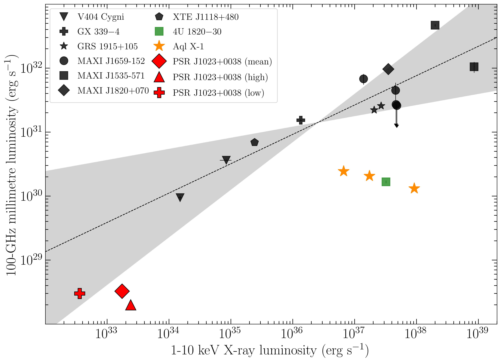
الصورة الخاصة بأنظمة NS أكثر تنوعًا (راجع van den Eijnden et al. 2021 للحصول على نظرة عامة حديثة). تمت ملاحظة جميع أنظمة NS الثلاثة المذكورة أعلاه في النطاق المليمتري مع ALMA، إلى جانب الملاحظات على ترددات أخرى، في أنظمة ذات معدلات تراكم كتلة عالية ( erg s-1). 4U 172834 تمت ملاحظته أثناء التحول من الحالة الصلبة إلى الحالة الناعمة. كان الطيف منخفض التردد متوافقًا مع انبعاث السنكروترون من نفاثة مدمجة وكشف أيضًا عن وجود انقطاع من إشعاع السنكروترون السميك بصريًا إلى إشعاع السنكروترون الرقيق بصريًا عند ترددات في النطاق 1013 – 1014 هرتز. في حالة 4U 182030، تم اكتشاف انبعاث ملليمتر معزز أثناء حالة الأشعة السينية الناعمة (وهي المرة الأولى التي يتم فيها ملاحظة انبعاث ملليمتر لتراكم NS في الحالة الناعمة). كان الطيف من الراديو إلى النطاقات دون المليمترية مقلوبًا قليلاً ولم يظهر أي دليل على وجود كسر طيفي (Díaz Trigo et al. 2017). يشير هذا إلى انبعاث من نفاثة مدمجة ويدعم النتائج السابقة التي تفيد بأن النفاثات في أنظمة NS لا يبدو أنها مكبوتة تمامًا في حالات التراكم الناعمة (Migliari et al. 2004). تمت ملاحظة Aql X-1 خمس مرات باستخدام ALMA على مدى فترة زمنية قدرها 1.5 أشهر خلال مرحلة الانحلال لانفجار الأشعة السينية في 2016، والتي تغطي انتقالات متعددة بين حالات تراكم متميزة. كان الطيف من الراديو إلى النطاقات المليمترية متوافقًا مرة أخرى مع الانبعاث الصادر من نفاثة مدمجة، ولأول مرة في NS المتراكم في كتلة منخفضة XRB، تم اكتشاف كسر في SED بتردد يختلف بشكل كبير اعتمادًا على حالة التراكم. على وجه التحديد، انخفض تردد الكسر في البداية من 100 GHz إلى أقل من 5 GHz أثناء الانتقال من الحالة الصلبة إلى الحالة الناعمة، ثم زاد مرة أخرى حتى تردد داخل النطاق 30–100 GHz أثناء التحول إلى الحالة الصعبة في مراحل لاحقة من تسوس الانفجار (Díaz Trigo et al. 2018).
على عكس جميع الحالات المذكورة أعلاه، تم إجراء ملاحظات ALMA لـ J1023 في فترة لم يعرض فيها النظام أي تغييرات في حالته الطيفية وكان باقياً في حالة الأشعة السينية منخفضة اللمعان (1033 erg s-1). تجدر الإشارة إلى أن متوسط أطياف الأشعة السينية ومتوسطها الذي تم حله للوضع J1023 كان دائمًا صعبًا ولم يظهر أي تغييرات جوهرية على مدى السنوات العشر الماضية أو نحو ذلك خلال حالة الأشعة السينية منخفضة اللمعان.
يمكننا مقارنة سطوع المليمتر والأشعة السينية بمقدار J1023 مع تلك المقاسة للثقوب السوداء وأنظمة NS باستخدام ملاحظات المليمتر والأشعة السينية شبه المتزامنة. تم توضيح هذه اللمعانات في الجدول 9 والمرسومة في الشكل 12. على الرغم من الكمية المنخفضة نسبيًا لبيانات المليمتر/دون المليمتر الموجودة لـ XRBs، يوضح الشكل 12 أنه تم اكتشاف انبعاث متواصل مليمتري في الأنظمة التي تحقق نطاقًا واسعًا من لمعان الأشعة السينية (1033–1039 erg s-1) وأن J1023 يحمل الرقم القياسي حاليًا باعتباره أخفت XRB المكتشف بقوة في النطاق المليمتري.
تختلف الآلية المسؤولة عن انبعاث الأشعة السينية في الوضعين J1023 بشكل واضح عن تلك المستخدمة في أنظمة الثقوب السوداء في الحالة الصلبة، لذلك لا يمكن إجراء مقارنة مناسبة. مع أخذ ذلك في الاعتبار، قمنا بتقييم كيفية مقارنة موضع J1023 على المستوى – مع تلك الموجودة في أنظمة الثقوب السوداء من خلال تحديد معلمات اعتماد على كعلاقة بالشكل 1515 15 erg s-1 و erg s-1 هي متوسط القيم المكتشفة في ثقبنا الأسود عينة.. قمنا بعد ذلك بالتحقق من شكل الارتباط – لأنظمة الثقب الأسود عن طريق إجراء أخذ عينات MCMC قائم على بايزي لبيانات الثقب الأسود (بما في ذلك الحدود العليا) باستخدام خوارزمية الانحدار الخطي linmix-err (Kelly 2007). هناك ثلاث معلمات مجانية: التقاطع ، والمنحدر ، و، وهي معلمة تمثل تبعثرًا عشوائيًا جوهريًا (غاوسيًا) للقيم حول النموذج الأفضل ملاءمة. قمنا بحساب القيم المتوسطة للمعلمات الملائمة من 104 المستمدة من التوزيع الخلفي، وحددنا 1 الفواصل الزمنية الموثوقة لهذه المعلمات باستخدام النسب المئوية 16th–84 للتوزيعات الخلفية. استنتجنا و و . يتوافق المنحدر الأفضل ملاءمة مع ذلك المشتق للارتباط – لأنظمة الثقوب السوداء (Gallo et al. 2018) ضمن حالات عدم اليقين. يوضح الشكل 12 المنحدر الأفضل (خط متقطع أسود) والمنطقة على المستوى حيث تقع قيم و على مسافة أقل من 3 من المنحدر الأفضل ملاءمة (المنطقة المظللة باللون الرمادي). يوضح هذا الشكل أنه أثناء النمط المنخفض، يتبع J1023 نفس الارتباط مثل أنظمة الثقوب السوداء في الحالة الصلبة (Bogdanov et al. 2018).
5 خلاصة واستنتاجات
لقد قدمنا نتائج أكبر حملة متعددة الأطوال الموجية أُجريت حتى الآن على tMSP PSR J1023$+$0038. تمت هذه الحملة في شهر يونيو 2021 بينما كان النظام في حالة قرصية نشطة منخفضة اللمعان في الأشعة السينية. ويمكن تلخيص النتائج الرئيسية التي توصلنا إليها على النحو التالي:
في الليلة الأولى من عمليات الرصد، تم اكتشاف نشاط توهجي في الأشعة السينية والأطوال الموجية البصرية، يليه سلوك تبدل النمط في الأشعة السينية. كان الانبعاث فوق البنفسجي خافتًا بشكل ملحوظ في النمط المنخفض، بينما كان الإصدار الراديوي المستمر أكثر سطوعًا. لم يتم اكتشاف أي دليل على انبعاث راديوي نبضي في أي من الوضعين. توفر ملاحظاتنا الحدود الأكثر صرامة على كثافة التدفق الراديوي النبضي حتى الآن.
في الليلة الثانية من الملاحظات، تم اكتشاف تباين منخفض الأهمية في الإشارة المستقطبة الضوئية أثناء تغيرات النمط، مع مستوى LP أعلى قليلاً في النمط المرتفع مقارنةً بالنمط المنخفض. لم يتبع انبعاث المليمتر بشكل صارم الأوضاع المنخفضة للأشعة السينية، باستثناء توهجين قصيرين. حدثت إحدى هذه التوهجات عند الانتقال من النمط المرتفع إلى النمط المنخفض، بينما لا يمكن تحديد الوقت الدقيق لبداية التوهج الآخر بسبب نقص التغطية الرصدية.
تتيح هذه النتائج رسم صورة فيزيائية لتبدلات النمطين المرتفع والمنخفض في J1023، والتي تتضمن نجمًا نابضًا يعمل بالطاقة الدورانية، وقرص تراكم، وقذوفات كتلية متقطعة فوق نفاثة مدمجة نسبوية. أثناء النمط المرتفع، ينتج إشعاع السنكروترون الموجود في مقدمة الصدمة بين رياح النجم النابض وتدفق التراكم الداخلي معظم انبعاث الأشعة السينية، بالإضافة إلى النبضات في الأشعة السينية وفوق البنفسجية والنطاق البصري. يُحفَّز الانتقال إلى النمط المنخفض عن طريق قذوفات كتلية متقطعة، مما يؤدي إلى انخفاض في تدفق الأشعة السينية وإخماد النبضات. أثناء النمط المنخفض، تستمر رياح النجم النابض في اختراق قرص التراكم وتطلق نفاثة مدمجة، مما يساهم في الانبعاث متعدد النطاقات بنفس الطريقة كما هو الحال في النمط المرتفع. في نهاية المطاف، يقوم الجريان القادم من القرص بإعادة ملء المناطق الداخلية خارج أسطوانة الضوء للنجم النيوتروني، مما يؤدي إلى زيادة الانبعاث والنبضات عند ترددات الأشعة السينية وفوق البنفسجية والبصرية. ثم يعود النظام إلى النمط المرتفع. ويدعم هذا السيناريو نمذجة SEDs المستخرجة بشكل منفصل خلال النمطين المرتفع والمنخفض.
يمكن لرياح النجم النابض النسبية تشكيل هيكل وديناميكيات التدفقات التراكم في أنظمة XRB التي تحتوي على نجوم نيوترونية سريعة الدوران ويمكن استخدامها لاستكشاف آليات الانبعاث في tMSPs وأنظمة XRB أخرى.
تشترك أنظمة الثقوب السوداء وtMSPs في أوجه تشابه مثيرة للاهتمام في خصائصها الظاهرية، مما يؤكد الحاجة إلى مزيد من البحث لتعميق فهمنا لفيزياء التراكم في الأجسام المدمجة.
توضح هذه النتائج كيف توفر الحملات متعددة الأطوال الموجية التي تجمع بين تقنيات المراقبة المتنوعة أدوات قوية لكشف طبيعة الأجسام المراوغة مثل tMSPs.
Acknowledgements.
ونشكر الحكم على التعليقات المفيدة. نشكر موظفي ALMA، وخاصة Edwige Chapillon، للمساعدة في جدولة الملاحظات؛ NICER PI، كيث جيندرو، للموافقة على طلبنا ToO وفريق العمليات لتنفيذ الملاحظات؛ براد سينكو وSwift العلماء ومخططي العلوم، لجعل Swift مراقبة هدف الفرصة ممكنة؛ ناندو باتات، للمساعدة في جدولة ملاحظات NTT/SOFI؛ وجوليا إليانو، لتقديمها فحوصات بشأن تحليل توقيت بيانات الأشعة السينية؛ وروب فيندر، لتوفيره دفاتر ملاحظات مفيدة حول إشعاع السنكروترون من مصادر راديوية متغيرة؛ ناندا ريا، للحصول على تعليقات مفيدة على المخطوطة.تستند النتائج الواردة في هذه الدراسة إلى الملاحظات التي تم الحصول عليها باستخدام XMM-Newton (PI: كامبانا)؛ NuSTAR (PI: كامبانا)؛ NASA/ESA تلسكوب هابل الفضائي (تم الحصول عليه من معهد علوم التلسكوب الفضائي، الذي تديره رابطة الجامعات لأبحاث علم الفلك، Inc.، بموجب عقد NASA NAS 5–26555. وترتبط هذه الملاحظات بالبرنامج 16061؛ PI: كامبانا)؛ FAST (PI: هو)؛ REM التلسكوب، INAF تشيلي (PI: باجليو). تم الحصول على جزء من الملاحظات المقدمة في هذه الدراسة في المرصد الأوروبي الجنوبي ضمن برنامج ESO 107.22RK.001 (PI: باجليو). تستخدم هذه الورقة أيضًا بيانات ALMA التالية: ADS/JAO.ALMA#2019.A.00036.S (PI: Coti Zelati). XMM-Newton هي مهمة علمية تابعة لوكالة الفضاء الأوروبية (ESA) بأدوات ومساهمات ممولة مباشرة من ESA الدول الأعضاء و NASA. NuSTAR هو مشروع يقوده معهد كاليفورنيا للتكنولوجيا، ويديره مختبر الدفع النفاث وبتمويل من NASA. المرصد الوطني لعلم الفلك الراديوي هو منشأة تابعة للمؤسسة الوطنية للعلوم يتم تشغيلها بموجب اتفاقية تعاون من قبل شركة Associated Universities, Inc. FAST هي منشأة علمية وطنية صينية ضخمة، تديرها المراصد الفلكية الوطنية التابعة للأكاديمية الصينية للعلوم (NAOC). NICER هو 0.2–12 keV تلسكوب يعمل بالأشعة السينية في محطة الفضاء الدولية، بتمويل من NASA. مرصد نيل غيرلز Swift هو مهمة NASA/UK/ASI. ALMA هي شراكة بين ESO (تمثل الدول الأعضاء)، NSF (USA) و NINS (اليابان)، مع NRC (كندا)، MOST و ASIAA (تايوان)، وKASI (جمهورية كوريا)، بالتعاون مع جمهورية تشيلي. يتم تشغيل المرصد المشترك ALMA بواسطة ESO و AUI/NRAO و NAOJ.
تم تطوير وصيانة XMM-Newton SAS من قبل مركز العمليات العلمية في مركز علم الفلك الفضائي الأوروبي مركز. تم تطوير برنامج NuSTAR لتحليل البيانات (NuSTARDAS) بشكل مشترك بواسطة ASI مركز بيانات العلوم (ASDC، إيطاليا) ومعهد كاليفورنيا للتكنولوجيا (Caltech، USA).
البيانات التي تدعم نتائج هذه الدراسة متاحة للجمهور في مستودعات الأرشيف الخاصة بها على الإنترنت (XMM-Newton: http://nxsa.esac.esa.int/nxsa-web/; NICER: https://heasarc.gsfc.nasa.gov/FTP/nicer/data/obs; NuSTAR: https://heasarc.gsfc.nasa.gov/W3Browse/all/numaster.html; Swift: https://heasarc.gsfc.nasa.gov/cgi-bin/W3Browse/w3browse.pl; HST: http://hst.esac.esa.int/ehst/; VLA: https://data.nrao.edu/portal/; VLT/FORS2: http://archive.eso.org/scienceportal/; ALMA: http://almascience.nrao.edu/aq/; REM: http://ross.oas.inaf.it/REMDB/public.php; NTT/SOFI: http://archive.eso.org/scienceportal/). يمكن الوصول إلى بيانات FAST من خلال مركز بيانات FAST: https://fast.bao.ac.cn/cms/article/11/.
FCZ مدعوم بمنحة Ramón y Cajal (اتفاقية المنحة RYC2021-030888-I) والمنحة الكاتالونية SGR-Cat 2021 (PI: Graber). FCZ و DFT مدعومان من برنامج Unidad de Excelencia María de Maeztu CEX2020-001058-M. FCZ، SCa، PD’A، FA، PC، DdM و AP يقرون بالدعم المالي من INAF- مشروع البحث الأساسي في الفيزياء الفلكية “الكشف عن النبض البصري لأسرع النجوم النيوترونية الممغنطة” (FANS; PI: AP). SCa، SCo و PD’A يقر بالدعم من ASI يمنح I/004/11/5. GB يعترف بالدعم من منحة PID2020-117710GB-I00 الممولة من MCIN/ AEI /10.13039/501100011033. AMZ مدعوم بـ PRIN-MIUR 2017 UnIAM (توحيد النجوم المغناطيسية المعزولة والمتراكمة، PI S. Mereghetti). XH مدعوم من المؤسسة الوطنية للعلوم الطبيعية في الصين من خلال المنحة رقم 12041303. JL مدعوم من المؤسسة الوطنية للعلوم الطبيعية في الصين من خلال المنحة رقم 12273038. DdM و AP يعترفان بالدعم المالي من وكالة الفضاء الإيطالية (ASI) والمعهد الوطني لعلوم الفضاء الفيزياء الفلكية (INAF) بموجب الاتفاقيات ASI-INAF I/037/12/0 و ASI-INAF n.2017- 14-H.0، من INAF ‘Sostegno alla ricerca Scientifica تيارات رئيسية dell’INAF’، المرسوم الرئاسي 43/2018 ومن INAF ‘SKA/CTA المشاريع’، المرسوم الرئاسي 70/2016. DMR و DMB يعترفان بدعم NYU صندوق أبوظبي لتعزيز البحوث تحت المنحة RE124. DFT مدعوم من المنح PID2021-124581OB-I00 بتمويل من MCIN/AEI/10.13039/501100011033, 2021SGR00426 من ولاية كاتالونيا العامة وبواسطة MCIN بتمويل من الاتحاد الأوروبي NextGeneration EU (PRTR-C17.I1). MM يشيد ببرنامج أثينا البحثي برقم المشروع 184.034.002، والذي يتم تمويله (جزئيًا) من قبل مجلس الأبحاث الهولندي (NWO) ويشكر اجتماع الفريق في المعهد الدولي لعلوم الفضاء (برن) على المناقشات المثمرة. FMV يعترف بدعم وزارة العلوم الاسبانية لمنحة PID2020–120323GB–I00 ومنحة FJC2020-043334-I الممولة من قبل MCIN/AEI/10.13039/501100011033 والجيل القادم EU/PRTR. تم أيضًا دعم هذا العمل جزئيًا بالإجراء COST ‘PHAROS’ (CA 16124).
البرمجيات: APLPY v.2.1.0 (Robitaille and Bressert 2012); Astropy v.5.3 (Astropy Collaboration et al. 2013, 2018, 2022); CASA v.6.5.2 (CASA Team et al. 2022); CIAO v.4.15 و CALDB v.4.10.4 (Fruscione et al. 2006); CORNER PLOT v.2.2.1 (Foreman-Mackey 2016); DAOPHOT (Stetson 1987a)، جزء من برنامج ستارلينك (Currie et al. 2014; Berry et al. 2022)؛ HEASOFT v.6.31.1 (Nasa High Energy Astrophysics Science Archive Research Center (Heasarc) 2014); IRAF v.2.17 (https://github.com/iraf-community/iraf); LINMIX-ERR (https://github.com/jmeyers314/linmix); MATPLOTLIB v.3.7.1 (Hunter 2007); NICERDAS v.10a; NUMPY v.1.24.0 (Harris et al. 2020); NUSTARDAS, v.2.1.2; PRESTO v.4.0 (https://github.com/scottransom/presto); SAOImageDS9 v.8.4 (Joye and Mandel 2003); SAS v.20.0 (Gabriel et al. 2004); SCIPY v.1.10.1 (Virtanen et al. 2020); SRPAstro v.4.8.0 (https://pypi.org/project/SRPAstro/); XRONOS v.5.22 (Stella and Angelini 1992); XSPEC v.12.13.0g (Arnaud 1996).
بناءً على الطلب، سيوفر المؤلفان المقابلان (MCB وFCZ) الكود المستخدم لإنتاج الأرقام.
References
- The Tenth Data Release of the Sloan Digital Sky Survey: First Spectroscopic Data from the SDSS-III Apache Point Observatory Galactic Evolution Experiment. ApJS 211 (2), pp. 17. External Links: Document, 1307.7735, ADS entry Cited by: §2.5.
- Optical pulsations from a transitional millisecond pulsar. Nat. Astron. 1, pp. 854–858. External Links: 1709.01946, Document, ADS entry Cited by: §4.1.
- A Fourier Domain “Jerk” Search for Binary Pulsars. ApJ 863 (1), pp. L13. External Links: Document, 1807.07900, ADS entry Cited by: §2.6.
- Successful commissioning of FORS1 - the first optical instrument on the VLT.. The Messenger 94, pp. 1–6. External Links: ADS entry Cited by: §2.11.
- Accretion-powered Pulsations in an Apparently Quiescent Neutron Star Binary. ApJ 807 (1), pp. 62. External Links: Document, 1412.1306, ADS entry Cited by: §1.
- Long-Term Radio Timing Observations of the Transition Millisecond Pulsar PSR\textasciitildeJ1023+0038. arXiv e-prints, pp. arXiv:1311.5161. External Links: 1311.5161, ADS entry Cited by: §3.4, §4.1.2, §4.1, §4.2.2, §4.4.
- A Radio Pulsar/X-ray Binary Link. Science 324 (5933), pp. 1411. External Links: Document, 0905.3397, ADS entry Cited by: §1, §2.6, §3.5.2, §4.1.2, §4.2.2.
- XSPEC: The First Ten Years. In XSPEC: The First Ten Years, G. H. Jacoby and J. Barnes (Eds.), Astronomical Data Analysis Software and Systems V, Vol. 101, pp. 17–20. External Links: ADS entry Cited by: §5.
- The Astropy Project: Building an Open-science Project and Status of the v2.0 Core Package. aj 156 (3), pp. 123. External Links: Document, 1801.02634, ADS entry Cited by: §5.
- The Astropy Project: Sustaining and Growing a Community-oriented Open-source Project and the Latest Major Release (v5.0) of the Core Package. ApJ 935 (2), pp. 167. External Links: Document, 2206.14220, ADS entry Cited by: §5.
- Astropy: A community Python package for astronomy. A&A 558, pp. A33. External Links: ADS entry, Document, 1307.6212 Cited by: §5.
- Different twins in the millisecond pulsar recycling scenario: Optical polarimetry of PSR J1023+0038 and XSS J12270-4859. A&A 591, pp. A101. External Links: Document, 1605.00653, ADS entry Cited by: §1, §2.11, §3.2, §3.2, §3.3, §4.3.
- Polarimetric and spectroscopic optical observations of the ultra-compact X-ray binary 4U 0614+091. A&A 572, pp. A99. External Links: Document, 1410.1876, ADS entry Cited by: §4.3.
- Probing Jet Launching in Neutron Star X-Ray Binaries: The Variable and Polarized Jet of SAX J1808.4-3658. ApJ 905 (2), pp. 87. External Links: Document, 2010.15176, ADS entry Cited by: §2.11, §2.11, §2.11, §4.3.
- Peering at the outflow mechanisms in the transitional pulsar PSR J1023+0038: simultaneous VLT, XMM-Newton, and Swift high-time resolution observations. A&A 631, pp. A104. External Links: Document, 1909.05348, ADS entry Cited by: §3.2.
- A Wildly Flickering Jet in the Black Hole X-Ray Binary MAXI J1535-571. ApJ 867 (2), pp. 114. External Links: Document, 1807.08762, ADS entry Cited by: §3.2.
- An Unstable Central Disk in the Superluminal Black Hole X-Ray Binary GRS 1915+105. ApJ 479 (2), pp. L145–L148. External Links: Document, astro-ph/9702048, ADS entry Cited by: §4.1.
- Starlink - The Original and Best. In Astronomical Society of the Pacific Conference Series, J. E. Ruiz, F. Pierfedereci, and P. Teuben (Eds.), Astronomical Society of the Pacific Conference Series, Vol. 532, pp. 559. External Links: ADS entry Cited by: §5.
- Coordinated X-Ray, Ultraviolet, Optical, and Radio Observations of the PSR J1023+0038 System in a Low-mass X-Ray Binary State. ApJ 806 (2), pp. 148. External Links: Document, 1412.5145, ADS entry Cited by: §1.
- Simultaneous Chandra and VLA Observations of the Transitional Millisecond Pulsar PSR J1023+0038: Anti-correlated X-Ray and Radio Variability. ApJ 856 (1), pp. 54. External Links: Document, 1709.08574, ADS entry Cited by: §1, §2.5, §3.4, §3.5.1, §4.1, §4.1, §4.2.3, §4.4, Table 8.
- On the physics of cold MHD winds from oblique rotators. A&A 349, pp. 1017–1026. External Links: astro-ph/9907051, ADS entry Cited by: Figure 9.
- High fidelity deconvolution of moderately resolved sources. Ph.D. Thesis, New Mexico Institute of Mining and Technology, United States. External Links: ADS entry Cited by: §2.12.
- A Search for Pulsars in Quiescent Soft X-Ray Transients. I.. ApJ 589 (2), pp. 902–910. External Links: Document, astro-ph/0302128, ADS entry Cited by: §4.1.2.
- The Swift X-Ray Telescope. Space Science Reviews 120, pp. 165–195. External Links: ADS entry Cited by: §2.8.
- Spin-down rate of the transitional millisecond pulsar PSR J1023+0038 in the optical band with Aqueye+. MNRAS 498 (1), pp. L98–L103. External Links: Document, 2007.09980, ADS entry Cited by: §1.
- Probing X-ray emission in different modes of PSR J1023+0038 with a radio pulsar scenario. A&A 629, pp. L8. External Links: Document, ADS entry Cited by: §2.11.
- Accreting Pulsars: Mixing-up Accretion Phases in Transitional Systems. In Astrophysics and Space Science Library, L. Rezzolla, P. Pizzochero, D. I. Jones, N. Rea, and I. Vidaña (Eds.), Astrophysics and Space Science Library, Vol. 457, pp. 149. External Links: Document, 1804.03422, ADS entry Cited by: §1.
- The relationship between infrared, optical, and ultraviolet extinction. ApJ 345, pp. 245–256. External Links: ADS entry, Document Cited by: §4.2.1.
- CASA, the Common Astronomy Software Applications for Radio Astronomy. PASP 134 (1041), pp. 114501. External Links: Document, 2210.02276, ADS entry Cited by: §5.
- High-Speed Optical Photometry of the Ultracompact X-Ray Binary 4U 1626-67. ApJ 492, pp. 342–351. External Links: astro-ph/9706049, Document, ADS entry Cited by: §4.2.2.
- Near-infrared jet emission in the microquasar XTE J1550-564. A&A 529, pp. A3. External Links: Document, 1102.5054, ADS entry Cited by: §4.1.
- Synchrotron Self-Absorption in Radio Supernovae. ApJ 499 (2), pp. 810–819. External Links: Document, ADS entry Cited by: §4.2.2.
- Engulfing a radio pulsar: the case of PSR J1023+0038. MNRAS 444 (2), pp. 1783–1792. External Links: Document, 1409.0427, ADS entry Cited by: §1, §3.2, §3.2, §4.1.2.
- Simultaneous broadband observations and high-resolution X-ray spectroscopy of the transitional millisecond pulsar PSR J1023+0038. A&A 611, pp. A14. External Links: Document, 1801.07794, ADS entry Cited by: §1, §4.1.1.
- GRB 990510: linearly polarized radiation from a fireball. A&A 348, pp. L1–L4. External Links: arXiv:astro-ph/9906319, ADS entry Cited by: §2.11.
- The Multi-frequency Robotic facility REM: first results. Astronomische Nachrichten 325 (6), pp. 543–548. External Links: Document, ADS entry Cited by: §2.10.
- Starlink Software in 2013. In Astronomical Data Analysis Software and Systems XXIII, N. Manset and P. Forshay (Eds.), Astronomical Society of the Pacific Conference Series, Vol. 485, pp. 391. External Links: ADS entry Cited by: §5.
- Disc-jet coupling changes as a possible indicator for outbursts from GX 339-4 remaining within the X-ray hard state. MNRAS 502 (1), pp. 521–540. External Links: Document, 2012.05206, ADS entry Cited by: §4.4, Table 9.
- The Proper Motion of PSR J1550-5418 Measured with VLBI: A Second Magnetar Velocity Measurement. ApJ 748, pp. L1. External Links: 1201.4684, Document, ADS entry Cited by: §1, Figure 6, Figure 7, §3.4, §4.2.2.
- Radio Imaging Observations of PSR J1023+0038 in an LMXB State. ApJ 809 (1), pp. 13. External Links: Document, 1412.5155, ADS entry Cited by: §1, §2.5, §2.5, §2.5, §3.4.
- Instrumentation for Large Telescopes. Cambridge University Press 199, pp. 287. Cited by: §2.11.
- The evolving jet spectrum of the neutron star X-ray binary Aql X-1 in transitional states during its 2016 outburst. A&A 616, pp. A23. External Links: Document, 1804.08322, ADS entry Cited by: §4.4, §4.4, Table 9.
- ALMA observations of 4U 1728-34 and 4U 1820-30: first detection of neutron star X-ray binaries at 300 GHz. A&A 600, pp. A8. External Links: Document, 1611.06988, ADS entry Cited by: §4.4, §4.4, Table 9.
- A search for signatures of interactions of X-ray binary outflows with their environments with ALMA. A&A 650, pp. A37. External Links: Document, 2104.05384, ADS entry Cited by: §4.4.
- Investigating the Mini and Giant Radio Flare Episodes of Cygnus X-3. ApJ 906 (1), pp. 10. External Links: Document, 2010.15002, ADS entry Cited by: §4.1.
- Methods and results of an automatic analysis of a complete sample of Swift-XRT observations of GRBs. MNRAS 397 (3), pp. 1177–1201. External Links: Document, 0812.3662, ADS entry Cited by: Table 9.
- Towards a unified model for black hole X-ray binary jets. MNRAS 355 (4), pp. 1105–1118. External Links: Document, astro-ph/0409360, ADS entry Cited by: §4.4.
- Spectral evidence for a powerful compact jet from XTE J1118+480. MNRAS 322 (2), pp. L23–L27. External Links: Document, astro-ph/0101346, ADS entry Cited by: §4.4, Table 9.
- Comprehensive coverage of particle acceleration and kinetic feedback from the stellar mass black hole V404 Cygni. MNRAS 518 (1), pp. 1243–1259. External Links: Document, 2206.09831, ADS entry Cited by: §4.1.
- The very flat radio-millimetre spectrum of Cygnus X-1. MNRAS 312 (4), pp. 853–858. External Links: Document, astro-ph/9910184, ADS entry Cited by: §4.4.
- Synchrotron self-absorption and the minimum energy of optically thick radio flares from stellar mass black holes. MNRAS 489 (4), pp. 4836–4846. External Links: Document, 1907.07463, ADS entry Cited by: §4.1.1.
- An Asymmetric Arcsecond Radio Jet from Circinus X-1. ApJ 506 (2), pp. L121–L125. External Links: Document, astro-ph/9808251, ADS entry Cited by: §4.1.
- Probing X-Ray Absorption and Optical Extinction in the Interstellar Medium Using Chandra Observations of Supernova Remnants. ApJ 826 (1), pp. 66. External Links: Document, 1504.07274, ADS entry Cited by: §2.11, §4.2.1.
- Corner.py: scatterplot matrices in python. The Journal of Open Source Software 1 (2), pp. 24. External Links: Document, Link Cited by: §5.
- CIAO: Chandra’s data analysis system. In Observatory Operations: Strategies, Processes, and Systems, D. R. Silva and R. E. Doxsey (Eds.), SPIE Conference Series, Vol. 6270, pp. 62701V. External Links: ADS entry, Document Cited by: §5.
- In The XMM-Newton SAS - Distributed Development and Maintenance of a Large Science Analysis System: A Critical Analysis, F. Ochsenbein, M. G. Allen, and D. Egret (Eds.), Astronomical Data Analysis Software and Systems (ADASS) XIII, Vol. 314, pp. 759. External Links: ADS entry Cited by: §5.
- Hard state neutron star and black hole X-ray binaries in the radio:X-ray luminosity plane. MNRAS 478 (1), pp. L132–L136. External Links: Document, 1805.01905, ADS entry Cited by: §4.4.
- Rapid optical and X-ray timing observations of GX339-4: multicomponent optical variability in the low/hard state. MNRAS 407 (4), pp. 2166–2192. External Links: Document, 1005.4685, ADS entry Cited by: §3.2.
- The Flux-Dependent rms Variability of X-Ray Binaries in the Optical. ApJ 697 (2), pp. L167–L172. External Links: Document, 0904.2791, ADS entry Cited by: §3.2.
- The Swift Gamma-Ray Burst Mission. ApJ 611, pp. 1005–1020. External Links: ADS entry Cited by: §2.8.
- The Neutron star Interior Composition ExploreR (NICER): an Explorer mission of opportunity for soft x-ray timing spectroscopy. In Space Telescopes and Instrumentation 2012: Ultraviolet to Gamma Ray, T. Takahashi, S. S. Murray, and J. A. den Herder (Eds.), Society of Photo-Optical Instrumentation Engineers (SPIE) Conference Series, Vol. 8443, pp. 844313. External Links: Document, ADS entry Cited by: §2.7.
- SiFAP4XP: time domain polarimetry with silicon photometers at the TNG. In Ground-based and Airborne Instrumentation for Astronomy IX, C. J. Evans, J. J. Bryant, and K. Motohara (Eds.), Society of Photo-Optical Instrumentation Engineers (SPIE) Conference Series, Vol. 12184, pp. 121847U. External Links: Document, ADS entry Cited by: §4.3.
- Variable polarisation and Doppler tomography of PSR J1023+0038 - Evidence for the magnetic propeller during flaring?. MNRAS 474 (3), pp. 3297–3306. External Links: Document, 1711.03097, ADS entry Cited by: §1, §4.3.
- Invgain v1.3 External Links: Document, Link Cited by: §2.5.
- Array programming with NumPy. Nature 585 (7825), pp. 357–362. External Links: Document, Link Cited by: §5.
- The Nuclear Spectroscopic Telescope Array (NuSTAR) High-energy X-Ray Mission. ApJ 770, pp. 103. External Links: ADS entry Cited by: §2.2.
- APASS DR10 Has Arrived! (Abstract). Journal of the American Association of Variable Star Observers (JAAVSO) 47 (1), pp. 130. External Links: ADS entry Cited by: §2.10.
- Data Analysis Recipes: Using Markov Chain Monte Carlo. ApJS 236, pp. 11. External Links: 1710.06068, Document, ADS entry Cited by: §2.11.
- A Rapid Change in X-Ray Variability and a Jet Ejection in the Black Hole Transient MAXI J1820+070. ApJ 891 (2), pp. L29. External Links: Document, 2003.01012, ADS entry Cited by: §4.1.
- PSRCHIVE and PSRFITS: An Open Approach to Radio Pulsar Data Storage and Analysis. PASA 21, pp. 302–309. External Links: ADS entry Cited by: §2.6.
- Matplotlib: a 2d graphics environment. Computing in Science & Engineering 9 (3), pp. 90–95. External Links: Document Cited by: §5.
- Searching for pulsed emission from XTE J0929-314 at high radio frequencies. A&A 497 (2), pp. 445–450. External Links: Document, 0902.4398, ADS entry Cited by: §4.1.2.
- Investigating the origin of optical and X-ray pulsations of the transitional millisecond pulsar PSR J1023+0038. A&A 669, pp. A26. External Links: Document, 2211.12975, ADS entry Cited by: §1, §4.1, §4.1.
- XMM-Newton observatory. I. The spacecraft and operations. A&A 365, pp. L1–L6. External Links: ADS entry Cited by: §2.1.
- Discovery of UV millisecond pulsations and moding in the low mass X-ray binary state of transitional millisecond pulsar J1023+0038. arXiv e-prints, pp. arXiv:2102.13145. External Links: 2102.13145, ADS entry Cited by: §3.1.
- The fundamental performance of FAST with 19-beam receiver at L band. Research in Astronomy and Astrophysics 20 (5), pp. 064. External Links: Document, 2002.01786, ADS entry Cited by: §2.6.
- Commissioning progress of the FAST. Science China Physics, Mechanics, and Astronomy 62 (5), pp. 959502. External Links: Document, 1903.06324, ADS entry Cited by: §2.6.
- New Features of SAOImage DS9. In Astronomical Data Analysis Software and Systems XII, H. E. Payne, R. I. Jedrzejewski, and R. N. Hook (Eds.), Astronomical Society of the Pacific Conference Series, Vol. 295, pp. 489. External Links: ADS entry Cited by: §5.
- Some Aspects of Measurement Error in Linear Regression of Astronomical Data. ApJ 665 (2), pp. 1489–1506. External Links: Document, 0705.2774, ADS entry Cited by: §4.4.
- Kepler K2 observations of the transitional millisecond pulsar PSR J1023+0038. MNRAS 477 (1), pp. 1120–1132. External Links: Document, 1801.10609, ADS entry Cited by: §1.
- ALMA/NICER observations of GRS 1915+105 indicate a return to a hard state. A&A 647, pp. A173. External Links: Document, 2102.00693, ADS entry Cited by: §4.4, Table 9.
- X-ray variability of transitional millisecond pulsars: a faint, stable, and fluctuating disc. MNRAS 512 (4), pp. 5269–5277. External Links: Document, 2202.08272, ADS entry Cited by: §4.1.2.
- Frequentist tests for Bayesian models. A&A 588, pp. A19. External Links: Document, 1511.02363, ADS entry Cited by: §4.2.4.
- The Australia Telescope National Facility Pulsar Catalogue. AJ 129, pp. 1993–2006. External Links: ADS entry, Document Cited by: §2.6.
- The XMM-Newton optical/UV monitor telescope. A&A 365, pp. L36–L44. External Links: ADS entry, Document, astro-ph/0011216 Cited by: §2.1.
- Coupling between the accreting corona and the relativistic jet in the microquasar GRS 1915+105. Nature Astronomy. External Links: Document, ADS entry Cited by: §4.1.
- Radio detections of the neutron star X-ray binaries 4U 1820 - 30 and Ser X-1 in soft X-ray states. MNRAS 351 (1), pp. 186–192. External Links: Document, astro-ph/0402600, ADS entry Cited by: §4.4.
- UV and X-ray pulse amplitude variability in the transitional millisecond pulsar PSR J1023+0038. A&A 660, pp. A63. External Links: Document, 2203.02372, ADS entry Cited by: §1, §2.1, §2.2, §2.3, §2.6, §3.1, §3.1, §3.2, §3.5.2, §4.1, §4.1.
- SOFI sees first light at the NTT.. The Messenger 91, pp. 9–13. External Links: ADS entry Cited by: §2.4.
- The INTEGRAL view on black hole X-ray binaries. New A Rev. 93, pp. 101618. External Links: Document, 2105.05547, ADS entry Cited by: §4.4.
- The Hot and Energetic Universe: A White Paper presenting the science theme motivating the Athena+ mission. arXiv e-prints, pp. arXiv:1306.2307. External Links: 1306.2307, ADS entry Cited by: §4.1.
- Advection-dominated Accretion: A Self-similar Solution. ApJ 428, pp. L13. External Links: Document, astro-ph/9403052, ADS entry Cited by: §4.1.
- HEAsoft: Unified Release of FTOOLS and XANADU. External Links: 1408.004, ADS entry Cited by: §5.
- Excess submillimetre emission from GRS 1915+105. MNRAS 317 (1), pp. 158–162. External Links: Document, astro-ph/0004123, ADS entry Cited by: §4.4.
- Pulsating in Unison at Optical and X-Ray Energies: Simultaneous High Time Resolution Observations of the Transitional Millisecond Pulsar PSR J1023+0038. ApJ 882 (2), pp. 104. External Links: Document, ADS entry Cited by: §1, §3.2, §3.5.2, Figure 9, §4.1.1, §4.1, §4.1, §4.1, §4.2.4, §4.3.
- The First Continuous Optical Monitoring of the Transitional Millisecond Pulsar PSR J1023+0038 with Kepler. ApJ 858 (2), pp. L12. External Links: Document, 1801.04736, ADS entry Cited by: §1.
- Transitional Millisecond Pulsars. In Astrophysics and Space Science Library, S. Bhattacharyya, A. Papitto, and D. Bhattacharya (Eds.), Astrophysics and Space Science Library, Vol. 465, pp. 157–200. External Links: Document, ADS entry Cited by: §1.
- Exploring the high frequency emission of radio loud X-ray binaries. A&A 357, pp. 507–514. External Links: astro-ph/0005517, ADS entry Cited by: §4.4.
- A New Accretion Disk around the Missing Link Binary System PSR J1023+0038. ApJ 781 (1), pp. L3. External Links: Document, 1310.7549, ADS entry Cited by: §1, §3.5.2.
- FAST: Its Scientific Achievements and Prospects. The Innovation 1 (3), pp. 100053. External Links: Document, 2011.13542, ADS entry Cited by: §2.6.
- New search techniques for binary pulsars. Ph.D. Thesis, Harvard University. External Links: ADS entry Cited by: footnote 5.
- STROBE-X: X-ray Timing and Spectroscopy on Dynamical Timescales from Microseconds to Years. arXiv e-prints, pp. arXiv:1903.03035. External Links: 1903.03035, ADS entry Cited by: §4.1.
- APLpy: Astronomical Plotting Library in Python. External Links: 1208.017, ADS entry Cited by: §5.
- The Swift Ultra-Violet/Optical Telescope. Space Science Reviews 120, pp. 95–142. External Links: ADS entry, Document, arXiv:astro-ph/0507413 Cited by: §2.9.
- Jet spectral breaks in black hole X-ray binaries. MNRAS 429 (1), pp. 815–832. External Links: Document, 1211.1655, ADS entry Cited by: §4.4.
- An Evolving Compact Jet in the Black Hole X-Ray Binary MAXI J1836-194. ApJ 768 (2), pp. L35. External Links: Document, 1304.3510, ADS entry Cited by: §4.4.
- An Evolving Compact Jet in the Black Hole X-Ray Binary MAXI J1836-194. ApJ 768 (2), pp. L35. External Links: Document, 1304.3510, ADS entry Cited by: §4.4.
- Polarized infrared emission from X-ray binary jets. MNRAS 387 (2), pp. 713–723. External Links: Document, 0803.3731, ADS entry Cited by: §4.3.
- Polarized synchrotron emission in quiescent black hole X-ray transients. MNRAS 463 (3), pp. 2680–2689. External Links: Document, 1608.06948, ADS entry Cited by: §4.3.
- Rapid compact jet quenching in the Galactic black hole candidate X-ray binary MAXI J1535-571. MNRAS 498 (4), pp. 5772–5785. External Links: Document, 2008.11216, ADS entry Cited by: §4.4, §4.4, Table 9.
- Disk-Jet Coupling in the 2017/2018 Outburst of the Galactic Black Hole Candidate X-Ray Binary MAXI J1535-571. ApJ 883 (2), pp. 198. External Links: Document, 1906.00998, ADS entry Cited by: §4.1.
- A Multiwavelength Study of GRS 1716-249 in Outburst: Constraints on Its System Parameters. ApJ 932 (1), pp. 38. External Links: Document, 2205.04452, ADS entry Cited by: §3.2.
- XMM-newton. arXiv. External Links: Document, Link Cited by: §2.1.
- Wavelength dependence of interstellar polarization and ratio of total to selective extinction. ApJ 196, pp. 261–290. External Links: Document, ADS entry Cited by: §2.11, §3.3.
- Evidence for hot clumpy accretion flow in the transitional millisecond pulsar PSR J1023+0038. MNRAS 477 (1), pp. 566–577. External Links: Document, 1802.09826, ADS entry Cited by: §1.
- The peculiar chemical abundance of the transitional millisecond pulsar PSR J1023+0038 - Li enhancement. MNRAS 513 (1), pp. 71–89. External Links: Document, 2202.09070, ADS entry Cited by: §4.2.3, Table 8, footnote 14.
- The binary millisecond pulsar PSR J1023+0038 during its accretion state - I. Optical variability. MNRAS 453 (4), pp. 3461–3473. External Links: Document, 1507.07473, ADS entry Cited by: §1.
- The binary millisecond pulsar PSR J1023+0038 - II. Optical spectroscopy. MNRAS 488 (1), pp. 198–212. External Links: Document, 1906.04524, ADS entry Cited by: §4.2.2.
- Polarimetry of Binary Systems: Polars, Magnetic CVs, XRBs. In Astronomical Polarisation from the Infrared to Gamma Rays, R. Mignani, A. Shearer, A. Słowikowska, and S. Zane (Eds.), Astrophysics and Space Science Library, Vol. 460, pp. 247. External Links: Document, 1909.02316, ADS entry Cited by: §4.3.
- The Instrument of the Imaging X-Ray Polarimetry Explorer. AJ 162 (5), pp. 208. External Links: Document, 2108.00284, ADS entry Cited by: §4.3.
- A State Change in the Missing Link Binary Pulsar System PSR J1023+0038. ApJ 790 (1), pp. 39. External Links: Document, 1311.7506, ADS entry Cited by: §1, §3.5.2, §4.1.2.
- Xronos: a Timing Analysis Software Package. In Astronomical Data Analysis Software and Systems I, D. M. Worrall, C. Biemesderfer, and J. Barnes (Eds.), Astronomical Society of the Pacific Conference Series, Vol. 25, pp. 103. External Links: ADS entry Cited by: §5.
- DAOPHOT - A computer program for crowded-field stellar photometry. PASP 99, pp. 191–222. External Links: Document, ADS entry Cited by: §2.11, §5.
- DAOPHOT: A Computer Program for Crowded-Field Stellar Photometry. PASP 99, pp. 191. External Links: Document, ADS entry Cited by: §2.4.
- The European Photon Imaging Camera on XMM-Newton: The pn-CCD camera. A&A 365, pp. L18–L26. External Links: ADS entry Cited by: §2.1.
- Measuring fundamental jet properties with multiwavelength fast timing of the black hole X-ray binary MAXI J1820+070. MNRAS 504 (3), pp. 3862–3883. External Links: Document, 2103.09318, ADS entry Cited by: §4.4, Table 9.
- Tracking the variable jets of V404 Cygni during its 2015 outburst. MNRAS 482 (3), pp. 2950–2972. External Links: Document, 1810.05709, ADS entry Cited by: §4.4, §4.4, Table 9.
- Sub-mm Jet Properties of the X-Ray Binary Swift J1745-26. ApJ 805 (1), pp. 30. External Links: Document, 1502.00039, ADS entry Cited by: §4.4.
- Extreme jet ejections from the black hole X-ray binary V404 Cygni. MNRAS 469 (3), pp. 3141–3162. External Links: Document, 1704.08726, ADS entry Cited by: §4.1.1, §4.4.
- The European Photon Imaging Camera on XMM-Newton: The MOS cameras. A&A 365, pp. L27–L35. Cited by: §2.1.
- Study of the Largest Multiwavelength Campaign of the Microquasar GRS 1915+105. ApJ 571 (2), pp. 918–935. External Links: Document, astro-ph/0202154, ADS entry Cited by: §4.4.
- A new radio census of neutron star X-ray binaries. MNRAS 507 (3), pp. 3899–3922. External Links: Document, 2107.05286, ADS entry Cited by: §4.4.
- Broad-band monitoring tracing the evolution of the jet and disc in the black hole candidate X-ray binary MAXI J1659-152. MNRAS 436 (3), pp. 2625–2638. External Links: Document, 1308.4332, ADS entry Cited by: §4.4, Table 9.
- A Model for Variable Extragalactic Radio Sources. Nature 211 (5054), pp. 1131–1133. External Links: Document, ADS entry Cited by: §4.1.1, footnote 13.
- Searches for millisecond pulsations in low-mass X-ray binaries, 2. ApJ 435, pp. 362–371. External Links: ADS entry, Document Cited by: §3.2.
- On characterizing the variability properties of X-ray light curves from active galaxies. MNRAS 345 (4), pp. 1271–1284. External Links: Document, astro-ph/0307420, ADS entry Cited by: §3.2.
- Pulsar Wind-heated Accretion Disk and the Origin of Modes in Transitional Millisecond Pulsar PSR J1023+0038. ApJ 884 (2), pp. 144. External Links: Document, 1906.02519, ADS entry Cited by: §4.1.
- Origin and evolution of X-ray binaries and binary radio pulsars. ARA&A 31, pp. 93–127. External Links: ADS entry, Document Cited by: §4.1.2, §4.2.2.
- SciPy 1.0: Fundamental Algorithms for Scientific Computing in Python. Nat. Methods 17, pp. 261–272. External Links: ADS entry, Document Cited by: §5.
- FAST discovery of an extremely radio-faint millisecond pulsar from the Fermi-LAT unassociated source 3FGL J0318.1+0252. Science China Physics, Mechanics, and Astronomy 64 (12), pp. 129562. External Links: Document, 2109.00715, ADS entry Cited by: §2.6.
- The Imaging X-ray Polarimetry Explorer (IXPE). In Space Telescopes and Instrumentation 2016: Ultraviolet to Gamma Ray, J. A. den Herder, T. Takahashi, and M. Bautz (Eds.), Society of Photo-Optical Instrumentation Engineers (SPIE) Conference Series, Vol. 9905, pp. 990517. External Links: Document, ADS entry Cited by: §4.3.
- Radio pulsations from a neutron star within the gamma-ray binary LS I +61° 303. Nature Astronomy 6, pp. 698–702. External Links: Document, 2203.09423, ADS entry Cited by: §4.1.2.
- Calibration of X-ray absorption in our Galaxy. MNRAS 431 (1), pp. 394–404. External Links: Document, 1303.0843, ADS entry Cited by: Appendix A.
- The varying kinematics of multiple ejecta from the black hole X-ray binary MAXI J1820 + 070. MNRAS 505 (3), pp. 3393–3403. External Links: Document, 2105.09529, ADS entry Cited by: §4.1.1.
- The Space Telescope Imaging Spectrograph Design. PASP 110 (752), pp. 1183–1204. External Links: Document, ADS entry Cited by: §2.3.
- The REM telescope: detecting the near infra-red counterparts of Gamma-Ray Bursts and the prompt behavior of their optical continuum. Astronomische Nachrichten 322, pp. 275–285. External Links: Document, ADS entry Cited by: §2.10.
- eXTP: Enhanced X-ray Timing and Polarization mission. In Space Telescopes and Instrumentation 2016: Ultraviolet to Gamma Ray, J. A. den Herder, T. Takahashi, and M. Bautz (Eds.), Society of Photo-Optical Instrumentation Engineers (SPIE) Conference Series, Vol. 9905, pp. 99051Q. External Links: Document, 1607.08823, ADS entry Cited by: §4.1.
Appendix A البحث عن نظيرات لـ ALMA J102349.1003824
لقد بحثنا عن نظير لـ ALMA J102349.1003824 عند أطوال موجية أخرى باستخدام الملاحظات المتزامنة والمحفوظة للمجال. لم يتم اكتشاف أي الانبعاث فوق البنفسجي في موضع المصدر في الملاحظات Swift/UVOT المتزامنة مع ALMA في ليلة 2021 يونيو 26–27، إما في الصور التي تم جمعها بشكل منفصل خلال اللقطات الثلاث أو في كومة هذه الصور. لقد وضعنا حدًا أعلى 3 لحجم النظير المفترض لـ UVM221 ماج من الصورة المكدسة (إجمالي التعريض لـ 2.4 ks). قبل أسابيع قليلة من الحصول على ملاحظات ALMA، تمت ملاحظة FOV لـ ALMA J102349.1003824 أيضًا في المرشحات البصرية (، و SDSS) باستخدام Las Cumbres المرصد (LCO) شبكة التلسكوبات. ولم يتم الكشف عن أي نظير في هذه البيانات. قمنا بتعيين الحدود العليا 3 التالية على الحجم البصري باستخدام صور 60 s التي تم الحصول عليها باستخدام تلسكوب 1m التابع لشبكة LCO الموجودة في جنوب إفريقيا بتاريخ 2021 مايو 8: ماج, ماج, ماج. لا يوجد أيضًا نظير بصري/NIR في إصدار البيانات الثالث (DR3) من التلسكوب الفضائي Gaia أو في كتالوج المصادر النقطية 2MASS. ALMA J102349.1003824 لم يتم اكتشافه أيضًا في VLA الملاحظة التي أجريت في 2021 يونيو 3، وصولاً إلى الحد الأعلى لكثافة التدفق 3 12 Jy في 10 GHz.
تم إجراء العديد من الملاحظات الميدانية في نطاق الأشعة السينية الناعمة على مدى السنوات الماضية، وذلك باستخدام Swift و XMM-Newtonبشكل رئيسي. ومع ذلك، بالنظر إلى لمعان الأشعة السينية البالغ J1023 وبعدها الزاوي الصغير عن ALMA J102349.1003824 (22′′ )، فإن وظيفة انتشار النقاط لأدوات الأشعة السينية على وتشمل لوحة هذه المراصد موقع ALMA J102349.1003824، مما يمنع إجراء تقييم قاطع لوجود أو عدم وجود نظير للأشعة السينية لهذا المصدر. قمنا بعد ذلك بتحليل مراقبة 83-ks طويلة Chandra/ACIS-S (مقياس طيف التصوير CCD متقدم) تم إجراؤها في مارس 2011 (معرّف الرصد 11075) للبحث عن انبعاث الأشعة السينية في موضع ALMA J102349.1003824. لقد قمنا بإعادة معالجة البيانات باستخدام المهمة chandra-repro ضمن برنامج ciao وقمنا بتشغيل أداة الكشف عن المصدر wavdetect. لم يتم العثور على أي دليل على وجود نظير للأشعة السينية لـ ALMA J102349.1003824 . باستخدام srcflux، قمنا بتعيين 3 الحد الأعلى لمعدل العد الصافي وهو التهم s-1 على 0.5–7.0 keV نطاق الطاقة. بافتراض طيف قانون الطاقة الممتص بكثافة عمود امتصاص = cm-2 (أي المتوقع داخل المجرة في اتجاه المصدر: Willingale et al. 2013) ومؤشر الفوتون في المدى = 1 – 4، يُترجم الحد أعلاه إلى تدفق غير ممتص قدره erg cm-2 s-1 (اعتمادًا على منحدر قانون القوة المفترض) في النطاق 0.5–7 keV.